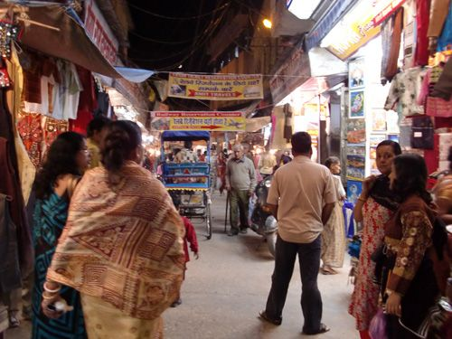
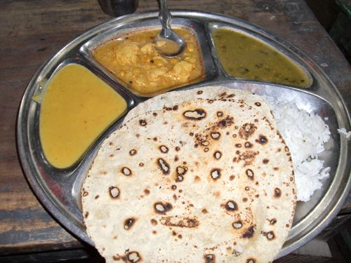
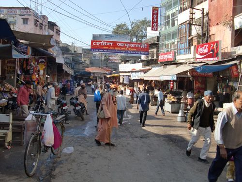
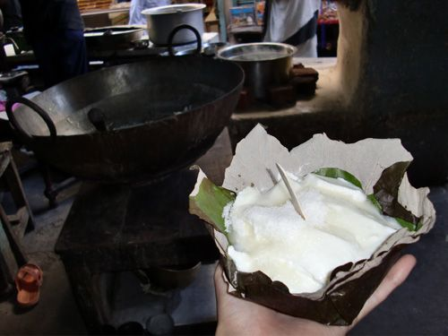
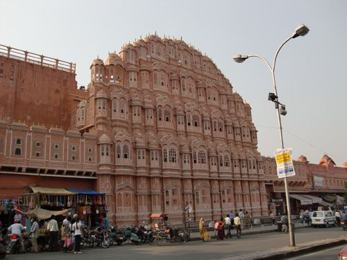
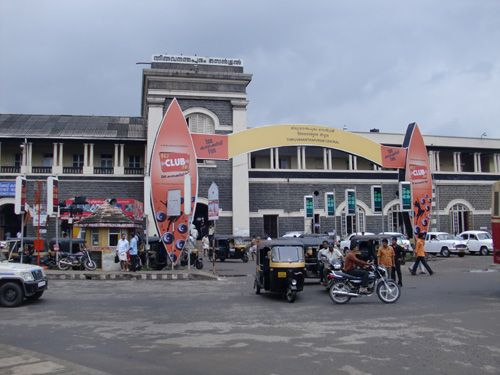

| ついでにインド（下） 詐欺師とカオスのインド後編 | |
| 鈴木麻里子 | |
| suemari (2013) | |

あらすじ
旅の軌跡
扉絵
16 ハリドワールへ インド一おいしいラッシー
17 リシケシュへ バスルームの恐怖
18 インドに来たからヨガに挑戦
コラム３ 実は私、インドでお金を騙し盗られました
19 ジャイプルへ バスの寝心地は最悪
20 ジャイプルにキレる１ 宝石詐欺
21 ジャイプルにキレる２ 恋愛と乞食
22 ジャイプルにキレる３ 多すぎる店
コラム４ インドに持っていくと便利な持ち物
23 ウダイプルでウザい奴
24 ムンバイへ インド人女性との出会い
25 直感は正しい マメな男の完全なる大嘘
26 バンガロール ホテルという名のレストラン
27 トリヴァンドラム１ 一期一会のイケメンテクニック
28 トリヴァンドラム２ 南インドのダンディズム
コラム５ インドで食べたもの
29 チェンナイで大洪水 簡単に金はやれん
30 これが真実 コルカタの詐欺集団
31 悪者はどっち？ 最後の大どんでん返し
32 インドの闇へ消えた少年
33 エピローグ 人生観はどうなった？
オマケ インド旅行にかかったお金
あとがき
奥付
あらすじ
インド到着初日から親切なインド人に助けられ、そのままインド人の家にお邪魔し、サダルストリートではラジャと名乗る少年を取り囲むインド人達に翻弄されたコルカタ。
そんな砂埃と喧騒の街コルカタから逃げ出し、今度はバラナシで見つけた日本人旅行者のケンちゃんを頼りにアグラへ移動。
アグラで頼りのケンちゃんと別れアイドルになった後、そこからは一人旅が始まる......！
泊まる場所、移動手段、予定一切なしの女一人旅。
すぐに人を信じてはついていってしまう、そんな無防備な私でもなんとか無事にインド一周できるのか!?
詐欺師とカオスにまみれた後半もどうぞお楽しみ下さい。
※文章中、上品ではない言葉遣いが出てくることがございますが、無事に生き抜く上での表現と受け取っていただけると幸いです。
2013年10月 鈴木麻里子(スー)
16 ハリドワールへ インド一おいしいラッシー
朝５時15分に目覚まし、５時45分にホテルをチェックアウト。
まだ暗い通りへ出ると、昨日頼んでおいたカルアさん（インド人）のオートリキシャが待っていた。
タージマハル周辺からアグラ・カント駅までは普通は50ルピーなのだけれど、早朝なので２倍の金額になるということだった。
最初、高い!! と思ったけど、これは、何人かの運転手にも聞いて、皆120～150ルピーと言ったところを、気のいい兄ちゃんのカルアさんは100ルピー（約200円）にしてくれたのだった。
と、、、カント駅へ向かっていると、ガコン!! と大きな音がして、オートリキシャが停まった。
えーっと、何が起こったのかな......？
停まった車の後ろをあけてみると、カバーのようなものが外れ、プラグが１本抜けていて、それを差しなおすとエンジンはかかり、無事に駅まで連れて行ってもらえた。
しかし、エンジンを冷やすファンのようなものが壊れたらしく、「これを直すのに800ルピーかかる......」なんて言い出すので、まさかのとばっちりがこっちにもこないよう、到着後すぐに100ルピーを渡して笑顔で別れた。
乗り物まで絶妙なタイミングで故障するインド、油断は一瞬たりともできないのである。
早朝のカント駅、まだ暗いよ～。
でもライトアップ(？)されていて綺麗。
今日乗るのは、UJJAINI EXPRESSで、アグラ・カント駅からハリドワール駅まで451kmの距離。
乗るのは昼間だけど、寝台車で200ルピー(約400円)。
ほぼ時間通りに駅に到着したけれど、電光掲示板には２番ホームと書かれていたのでのん気に歯など磨いていたら３番ホームに入ってきたのであせって慌てて乗り込んだ。
中はまだ寝ている人だらけで車内も暗く、乗り込んで自分の寝台ベッドを探すと、なんと知らんオッサンが寝てるやないですか。
車両と番号をもう一度確認し、あわわどうしよう......起こすのも怖いし......、とオロオロしていると、隣の上段に寝ていたおじさんが気づいて、私の切符に目をやり、寝ているオッサンをこづいた。
「オイアンタ、起きろ。ここはこの子のベッドだ、ほら移動して」
そう言うと、正体不明のオッサンは何も言わずにどこかへ消えた。
インドの列車は、切符も持っていない魑魅魍魎がわんさか乗っていて、空いている席があれば知らん顔をして勝手に居座るという、恐ろしい国なのだ。
ホッ、ありがとうございます～!!
これで晴れて自分のベッドを確保し、早起きした代わりにひたすら眠りながら平行移動するのである。
しかし、何で切符を持っていない人でも乗り込めるようにしているのか意味不明。毎回人で凄いことになっているし、その上通路が狭いのでトイレへ移動するのも一苦労。
明るくなってくると、人々は下の席に移動し、次々と乗り込んでくる乗客の荷物が上段の寝台ベッドへ置かれる。
今まで寝台だった所はもう荷物置き場と化しております。
しかし私は上段ベッドから降りない。だって怖いもんっ！(涙)
ひたすら寝たフリを続け、お腹が空いたのでお昼ご飯にビスケットを食べていると、私を見つけた下段のインド人の女の子モナが「下に降りておいでよ！」と笑顔で声をかけてきた。
チラリと下界を見ると、席にはぎっしりと人が座っていて、私が座る余裕などない。
実は今は、ディワリーとかいうお祭りで、たくさんのインド人がどこかしこへ移動しているので列車は激込みなのだ。
「ホラ、ここ空けたから、ここに座って！」
あら、じゃあせっかくなので、隣へ座る。
話を聞くと、モナは自分の宗教のグループの皆さんでどこかの聖地へお参りに行っていたのだとか。それで何教なのか聞いてみると、「パンジャビ」という答えが。最初全く分からなかったのだけれど、どうやらパンジャビとはシーク教徒のことらしい。
ヒンドゥー ＝ ヒンズー教徒
ムスリム ＝ イスラム教徒
パンジャビ ＝ シーク教徒
それで、この列車にはシーク教徒の皆さんがたくさん乗っているらしく、モナの隣にはアシュラム(修行場)の長である71歳のおばあさんがいて、皆さんにとって神様のような存在ということで、私もなぜか頭をなでてもらい、足に触って拝むという文化交流(宗教交流？)をさせていただきました。
「インドにいて分からないことがあったら、いつでも私の携帯に電話してね!!」と電話番号を教えてくれ、神様のような存在のアシュラムの長にもビスケットとリンゴをいただきました。
ハリドワールの駅に到着し、握手をしてパンジャビの皆さんとお別れ。
ありがとう！
ハリドワールの駅。
リキシャの勧誘もほとんどいなくて、結構平和。
ってゆーか、外人の旅行者が全然いない。。。
ガイドブックの地図を見ながらホテル探しに歩くのだけれど、お祭りのお陰でシングルの部屋がほとんど空いていない!?
結局１０軒ほど訪ね歩いた結果、一番安くて、まぁ悪くないホテルにチェックイン。
Hotel Samrat
ダブル 165ルピー（約330円）
共同バスルーム
部屋にチェックインして荷物を置いたあとは、モナがハリドワールはラッシーがおいしいと言っていたので、ホテルのスタッフにおいしいラッシーはどこで飲めるのか聞く。
紙に名前を書いてくれたので、じゃあ夜で暗くなっちゃったけど、ちょっと行ってみようかな！

外へ歩いていくと、人がたくさんいて明るく活気があるので、ほとんど危険を感じない。
今まで行った町の中でも、ハリドワールは雰囲気がいい！

途中で通りにあったお店にて夕食。
ターリー(大皿) 15ルピー(約30円)
少しだけ辛くて、味はあんまり分からないけど、お腹を満たすには充分。
さて、ホテルから1.5kmほどの所にあると聞いていたお店へてこてこてこ。
BADA BAZARというマーケットに入り、後は箇所箇所でお店の名前を聞いてそっちの方向へてこてこてこ。
20分ほど歩いてやっと見つけたお店、PRAKASH LOKに入り、「ラッシー」と伝える。すると店員のおじさんが、なんと冷蔵庫からラッシーを出してきた！
すごーい!! 泡がモコモコ!!
そして、、、めちゃくちゃうまーい☆☆☆ 量もたっぷりあって、一人だと少し多いぐらい。 まるでジャージーヨーグルトのような濃厚なクリームで、こんなラッシー初めて飲んだ～☆
モナとホテルのスタッフに感謝!!
再び来た道を歩いて帰るのだけど、ほんと明るくて活気があるのでほとんど危険を感じないのだ。ハリドワールいいじゃん！（今が祭りの時期だからなのかな？）
８時頃ホテルに戻り、さてシャワーを浴びようかと思うのだけれど、共同シャワーは水のみでお湯が出ないので、お湯だけをバケツにくんで用意してもらう。
スタッフが運んできてくれたバケツはかなり大きく、両手で取っ手を持って運ぶのも一苦労。でも、体を洗うには充分なお湯の量だ。
そしてシャワー室へ、えっちらおっちらとカニ歩きで持って入り、服を脱ぐ。
さて、お湯を......とデカいバケツを目の前にするが、どうやって使えばいいのか分からない。ちょっと触ってみるに、むちゃむちゃ熱いのだ。
み、水シャワーでもいいかな？ と蛇口をひねってシャワーを浴びるも、むちゃくちゃ冷たい!! 北インドは今、冬なのだ。アグラではまだ我慢(？)して水シャワーを浴びたけれど、ハリドワールでの水シャワーは寒すぎる!!
ということで、バケツにたっぷり入ったお湯を手でペチペチと体にあてるのだけど、熱い!!
シャワーをひねる、ツメタァーーー!!
お湯を体にパチャパチャする、アッチャアアア～～～!!!!
......一体どうすればいいんじゃコレ。。。
ピンチだ、ピンチすぎる。水もお湯もあるのに、まともに体を洗えないではないかっ！
この熱湯が冷めるまで待つか？
一体どんだけ時間がかかるんだよアンタ......。
バケツにシャワーの水をつぎたすか？
いや、それじゃお湯が溢れるし、すぐに冷えてしまう......。
素っ裸で寒さに震えながら頭をフル回転させる。
うー、何か、何かないのかっ!? シャワー室を隅々まで見渡す。
あぁっ！ 前に小さな容器が置いてあるじゃないかっ!!
そうだ、これを使えばいいんだ!! まさに救世主!!（涙）
容器にお湯を半分くみ、そしてそこに水を半分加える。
するとちょうどいい温度になり、それを少しずつジョボジョボ......と体にかけながら無事、シャワータイムは終わった。
あぁ、なんかニュージーランドでサバイバル生活送ってた頃を思い出すぜ。。。
凍傷と火傷の危機を見事乗り越え、インドの片隅にて私はまた一つ成長したのでありました。
17 リシケシュへ バスルームの恐怖
朝起きて、通りで朝食を適当に食べ、ハリドワールの中心的存在のHari ki Pairiを見に来た。
これがハリキパイリというガート(沐浴場)で、さわやかで風が気持ちいい。 時計塔もあって、見晴らしよく綺麗だね。
ガンガー(ガンジス川)はバラナシのと比べて全然綺麗で、これなら沐浴したり飲んだりしているのもまぁ分かる......(か!?)

ハリキパイリから横の道に入ってマーケットの中を歩いて戻ろう。

途中で声をかけられ、バナナの葉っぱ(？)に入ったヨーグルトを賞味。たっぷり入って5ルピー(約10円)、砂糖をたしてもらってなかなかおいち☆
これはアイスの木スプーンのようなもので食べるよ。ヨーグルトはそれぐらい弾力がある。
さて、何かインド人が着ているような涼しくていい服ないかな～......と歩いていると、良さげな店があったので入ってみる。
チェックアウトの時間も迫っていて、もうあまり時間がなかったので、350ルピーと言われた服を320ルピー（約640円）にしてもらって初インド服購入！
手縫いの刺繍が入っていて可愛いぞ☆
急いでホテルに戻り、チェックアウトした後、
荷物を頭に乗せながら行進するインド人旅行者の皆さんの後についてバス停へ向う。
頭に乗せると軽いのか、それとも道が歩きやすくなるのか？ 多分どっちもでありましょう。
ところで、写真の人が頭に乗っけているようなナイロンのスポーツバッグが、インドのトレンドのようで、インド人旅行者の皆さんが持っているのはほぼ全員コレ。というか、お店で売っているカバンもコレしか種類がない。ベースは黒で、たまにアクセントで赤や青が入るだけという地味さなのだ。サリーやスカーフなどは色とりどりなのに、旅行カバンだけなんで揃いも揃って黒いのか不思議であります。
そうしてバス停に到着～。
窓口でリシケシュ行きのバスを尋ねると、「あのバスだ！」と指差されたので、動いているバスを追いかけて飛び乗った。(この時ちょっと腕を打つ。やっぱ動いてるのに飛び乗るのは危ないね～。。。)
満杯のバスには、座る場所などなかったのだけれど、運転手のおじさんが、「前においで！」と呼んでくれて、おじさん達が座っている横をつめてスペースを作ってもらい、そこに座らせてくれた。優し～!!
運転席の窓が割れているバスはそのままリシケシュへと進む。
乗車料金19ルピー（約38円）
バスは順調に進み、約30分にて到着～。
目当てのラクシュマン・ジューラー橋までオートリキシャ→渡し舟→乗り合いジープと乗り継ぎ、橋近辺に無事到着。
まずは宿探し、と３件ほど見回り、部屋も広くてバスルーム付のホットシャワーで悪くなかったのでここに決定。
River View Cottage
ダブル（でも一人で使う） 200ルピー（約400円）
日本以外の宿は、部屋単位でお金を払うので、一人で使おうと二人で使おうと料金が同じなのだ。なので、連れ合いがいると半額ですむので、こういう時に二人旅だとメリットがあるんですよね～。（←いつも一人なので金がかかる。）
この宿にはレストランもあって、そこでターリー 80ルピー(約160円)を注文してみると、これが今までインドで食べたカレーの中で一番うまい!! このカレーならまた食べてもいいなぁ！
しかし、一緒に注文したマンゴーシェイク 40ルピーは、砂糖抜きなのにむちゃくちゃ甘くて、もう飲みたいとは思わない。。。
この宿は、ガンガーのすぐ横にあって、こんなに見晴らしが良くてきもちいい☆
さて、腹ごしらえの後は町を歩いてみよう！ 外へ出て橋の上を歩いてみると、景色が素敵～☆
う～ん、天気も良くて、風が気持ちいい～！
橋向こうにはたくさんのお店があり、ラッシーを飲んでみたり、色んなお店を覗いてみたりと楽しい。そうして歩いていると、洋服屋さん発見！
たくさんの肩かけが売られている！
この前ハリドワールで買ったインド服に合うものあるかな～？ と覗いてみる。
中に入ると、前のお客さんに広げたのか、たくさんの肩かけが置かれていた。
しかも珍しいことに、全部値段付き!?
置かれているものの中でカワイイものがあったので値段を見ると、880ルピー(約1760円)のシールが貼ってある。うわ、結構高い!? でも、肌触りがすごく良くて、質は良さそうだ。
「あのー、これ、いくら？」
ちょっと安くならないかなー......。
「あー、それは650ルピーにしとくよ」
安くなったー☆
ということで、肩かけ購入～♪
これで私も地元民～！
と、不思議なことに、こういう格好をして道を歩きだすと、ジロジロ見られたり声をかけられることは少なくなり、「ネパール人？」と聞かれるようになった。私のアイドルオーラは一体どこへ......。
アイドルの気持ち、そして元アイドルの気持ちが味わえる国、インド。
日も暮れてきたので、宿へ戻り、シャワーを浴びようとバスルームに入る。
と、、、何かがドアの裏側のくぼみにいるっ!!
デカい！ デカいクモがいる～～～～～っ!!!!
直径10センチほどもあるデカい奴がドアの後ろのくぼみにいたので、ヒィィ～......と泣きそうになりながら、ドアをちょっと開け閉めしてみると、クモがもの凄い速さでバスルームの壁を登って来た。
ギャァアァアアア～～～!!!!
そして、クモは天井についているボイラーの後ろに隠れた。
ヒィイィイ～～......!!!!
恐怖におびえながら、ボイラーの後ろへ視線をやってみると、クモの足が見え、ついでにその上にヒラヒラしている何かが見えた。
どうかシャワー浴びている間はクモがあの場所から動きませんようにっ!!
ぞわぞわしながらシャワーを浴びていると、
ポト
ん？
......何か、、、
木の枝のようなものが壁に沿って落ちてきた。
くっ、クモの足ぃいぃいいいいいいいい!!!!
そう、それはクモの足だったのだ。
どうやら、ボイラーの上でヒラヒラしていたものは、トカゲだったらしく、クモを食べたらしい。
ギャァアアああａＡＡＡＡＡ○×▽↑↓↑↓ＢＡＢＡ!!!!
その後も、１本づつ、時間を置いてクモの足がポトリポトリと壁に沿って上から落ちてきて、恐怖に包まれる。

ホラー映画かよ～～～～～～!!!!!!（涙）←ホラー映画大嫌い。今までほとんど見たことない。
これでデカいクモの心配はなくなったのだけれど、本当に怖かった。。。
生と死が隣り合わせの混沌の国インド、こんな所で体験したくなかったよう（泣）。
18 インドに来たからヨガに挑戦
さて、リシケシュといえば、かのビートルズがヨガ修行をしたことでも有名な、ヨガの聖地らしい。
ヨガ修行なんて聞くと、まとまった期間が必要なのかと思っていたけれど、昨日レストランで知り合ったドイツ人のジュリーによると、リシケシュにはヨガ教室がたくさーんあって、１回だけでも受けられるそうだ。そしてその相場は１回100ルピー(約200円)だとか。
それなら私もやってみたい！
朝の８時、ジュリーについてヨガ教室へ。
VEDIC YOGA MEDITATION
連れて来てもらったのはココ。
生徒は私とジュリーの２人、そして先生は若めのインド人男性。
ワクドキしながら教室の中へ入ると、、、部屋のカーテンが閉まっていて薄暗い。そして床には一体どのぐらい洗われていないのか気になる薄汚れたマットが。。。
ヒィイ～。。。ビートルズビートルズ!!
心の中でビートルズを念仏のように唱えながら覚悟を決め、ひんやりとしたマットの上に寝っころがったりしてヨガを受ける。
ってゆーか、ヨガなんて生涯初めての体験なので、先生は初心者用のヨガをやってくれるわけですが、専門用語が全く分かりません。
それでも１時間ぐらい見よう見真似でなんとか終了～。これで私もビートルズ～。
さて、帰ろうか、とジュリーの方を見ると、「私、これからアーユルヴェーダを習うのよ」と言った。
え？ そうなの!? 私もアーユルヴェーダの学校に興味あったの！
ジュリーはこの教室でアーユルヴェーダも同じ先生から習っているようで、値段を聞くと10日で6000ルピーだとか。
へー、値段的には悪くないね！ でもさ、それって裸になるんじゃ......？
「裸っていっても、上半身だけよ」
「えっ！ だって男だよ!?」
「ちゃんとした先生なんだから、男でも大丈夫よ。気にしないわ」
「ちょっ、危険じゃない!?」
「私、インドで今まで男性からアーユルヴェーダを何回か受けたこともあるし、問題なかったわよ」
「それって素っ裸で!?」
「そうよ(笑)。腕のいい人なら、男からも受けるわ」
え～！ さ、さすが欧米人。
アジア圏の私達から考えれば、いくら先生やプロでも男性に裸をマッサージされるなんてかなり抵抗があるのに、欧米人とは本当に恐ろしい人種である。
ジュリーと別れ、朝食を食べた後は、ブラブラしながらラムジューラー橋に到着。
ガイドブックに載っている、アーユルヴェーダが受けられるホテルRaj Palaceへ足を運ぶ。
アーユルヴェーダの学校に興味はあるけれど、まずはそれがどんなものなのか、色々受けてみなくては分からない。ということで、今回は「シロダーラ」という名前だけ聞いたことのあるものに挑戦だっ！
アーユルヴェーダ１時間 400ルピー(約800円)
シロダーラ45分 400ルピー(約800円)
若くて綺麗なインド人のお姉さんがやってきて、今回も素っ裸になるのかと思いきや、ありがたくもふんどしのようなものをつけてくれた。(腰に１本紐を巻き、その紐の間に細い布を挟むだけというシンプルなもの。ありがたや～。)
しかしほんと、女性の前でも素っ裸になるなんて抵抗ありまくりなのに、これが男だったらなんて考えられない。(欧米人は別人種ですね。)
お姉さんはケララ(アーユルヴェーダの発祥地らしい)の学校で習ったとかで、腕はバラナシの近所のおばあさんよりも上。でも結構力を入れて激しくマッサージするので、体力消耗によるであろうハァハァという息遣いが、この人ちょっと大丈夫かと思う。......あくまでも体力消耗によるものであると信じたい。
そしてその後のシロダーラというのは、額にオイルをひたすらたらしていくというマッサージ(？)で、睡眠やリラックスによいらしいが、髪の毛が油まみれになっていくのが心配であまりリラックスできない。
一体なんなんだこの不思議な儀式......と油まみれの頭で思いつつ終了～。
全部で１時間45分のアーユルヴェーダが終了すると、それはそれはもう体中が油まみれ。人生のうちでこんなに体が油にまみれることはそうそうないであろう。今、火をつけられたらよく燃えるだろうから、火の元だけには厳重注意したい。
目を開けると、頭から油が目の中へ垂れてきて、見える風景まで油まみれになった。視界がぼやけるうぅ～。。。
部屋の隅にお湯の出るシャワー室があり、転ばないようにヌラヌラ歩きながら、もらったシャンプーと石鹸で、ひたすら油を洗い落とす。
体が油まみれって凄いです。シャンプーや石鹸で３回洗っても、洗っても洗っても、ヌルヌルです。どれだけ洗っても普段の状態には戻りそうにないので、テカテカのまま外へ出たのであった。
さて、そろそろ次の移動でも考えるか、と旅行代理店へ行き、バスの金額やルートなど色々聞いていると、聖者のようなおじさんが話しかけてきた。
「ハロー」
わぁ、びっくりした！ ハ、ハロー。
「私はこの近くでヨガや瞑想を教えているんじゃよ」
「え、そうなんですか？ 私、今日初めてヨガやったんですよ～」
「すぐ隣にヨガ道場があるから、ちょっと見に来なされ」
すぐ隣なら行ってみようかな？ と聖者について行くと、防空壕のような穴ぐらだった。

「明日朝９時から瞑想するから、是非是非是非とも私の寺に来て下され!!」
防空壕だから人気がないのだろうか。必死さが逆にコワイ。
「あっ、もうこんな時間だから帰りま～す！ エヘ☆」
必死にお願いする聖者を後に、宿へ戻った。
～次の朝～
昨日、レストランで会ったイスラエル人の女の子に、評判の良いヨガ教室を教えてもらったので、そこへ行ってみようと早起き。
冷たい風がビュービュー吹くなか、そこへ行くと、鍵が閉まっている。
早く来すぎたかな?? と思っていると、「今日は日曜だから休みだよ」と、近所の人に言われる。
な、なんだとぅぉおおお～～～!! せっかく早起きしてきたのに、そりゃないよ～!!（涙）
かと言って、昨夜の聖者の防空壕、いや、寺には行く気になれず、他にないんかよ～......と歩いていると、別のヨガ教室発見。
SAI YOGA CENTER
ちょうど８時からだったので、中に入って聞いてみると、２時間100ルピーで初心者でも問題ないとのこと。
しかも、教室は昨日の所に比べて全然綺麗！
ここで体験させてもらうことにしよう。
内容は、ヨガ１時間半、瞑想30分、という構成。
昨日の所と比べると、色々とバリエーションのあるポーズをとり、そのポーズを先生がチェックして直してくれるという感じ。
生徒は６人、先生の人当たりもなかなか良くて、ここなら通ってもいいかなと思える。
そう、リシケシュにこのまま滞在して、ビートルズのようにヨガ修行をするのも可能だ。......しかし、重要なことに気づいた。
２日連続でヨガ教室に通ったけれど、どうもインドのヨガは私向きじゃない。私はタイで、タイのヨガと呼ばれるルーシーダットンを習ったのだけれど、そちらの方が簡単でラクなのだ。影響を受けるのはインド音楽だけでいいや、道端でインドのＣＤ１枚買ったしラバーソウルリボルバ～。
さ、ヨガにもう用はない。観光を続けることにしよう。
次に行ける所はどこかなとガイドブックを開く。
近いのは、首都のデリー。悪名高いデリーだ。
......大多数の人が行くであろう首都のデリーは怖いので絶対行かないと決めていた。軟禁されて高いツアーを組まされるとか、泥棒と詐欺師の宝庫だとか、そんな危険な話で有名な所には断じて行きたくない。純粋培養の鴨がネギしょって、野菜と鍋とビールまで持参して、アホ面下げてヨチヨチと乗り込むようなものではないか。
と、なると、、、その先のジャイプルへ行ってみるかぁ！
コラム３ 実は私、インドでお金を騙し盗られました
えー......、ヒジョーにお恥ずかしいお話ですが、タイトルの通り、私、インドでお金を騙し盗られました。。。
まぁ、旅人は一度ぐらいは騙された方が勉強になるんですかね......。
それも、私の場合は、ちょっと特殊で、インドでよくある、「高いツアーを組まされた」「貸したお金が返ってこない」「安い物を高く買わされた」というものではありません。
単刀直入に申しますと、Ｔシャツをオーダーして、それのお金を渡したにも関わらず、商品が送られてこなかったというものです。
当時の私は、自分のオリジナルＴシャツを安く作りたくて、タイ・ラオスと現地のＴシャツ工場巡りをして金額をチェックしていました。
それがインドのリシケシュで、たまたま声をかけられた絵や雑貨を売る小さな店で、「日本からのオーダーの品も受けている。先週も発送したばかりだ」と聞き、その店にＴシャツなんか置いていないのに「Ｔシャツが作れるかどうか」を聞いてしまったのです。
すると金額はタイ・ラオスよりも安く、タイまでの送料込みで50枚が7500ルピー(約15000円)と聞き、オーダーしました。
お金は先に60%支払う必要があるとのことで、4500ルピー(約9000円)を渡し、領収書ももらいました。
Ｔシャツのデザインの為、わざわざインドでも数少ないカラーコピー屋さんを探しだし、そのプリントアウトに200円も払いました。
自分のＴシャツができあがるのにワクワクして、もう一度考えると料金的に安いと思ったので、更に次の日、別のデザインをオーダーしました。そしてまた4500ルピーを渡し、合計9000ルピー(約18000円)を先払いしました。
Ｔシャツができあがるのは２週間後とのことで、商品を受け取るまでは油断できないので、度々電話をして進捗状況の確認をしました。
電話の奥の、「もうすぐできるよ！ 心配ないよ！ すぐに発送するよ！」との答えを信じたいと思っていました。
しかし、私がタイに戻った後も、一向にＴシャツが送られて来る様子はなく、タイからも何度も電話しました。正直、電話代だけでも結構かかりました......。
はー、タイやラオスではちゃんとＴシャツを作る現場でサンプルを確認していたのに、何で、よりにもよって実態のないインドでオーダーしてしまったのか。
オマエ頭おかしいんかと当時の自分に言ってやりたい。
それはその場所がインドの聖地、リシケシュであり、リシケシュで騙す人なんていないだろうと思ってしまったのも原因の一つです。(←当時の自分アンサー。)
うぅ、なんて自分は性善説なバカ野郎なんだっ!!(涙涙涙)
ということで、代わりの粗悪品が送られて来るとかも全くなく、18000円だけが消えてしまいました......。
その一ヵ月後に、タイで知り合ったアメリカ人の友達がちょうどリシケシュへ行くというので、駄目元で、お金を取り返してくれるよう頼んだところ、実際にお店には行けたのですが、当然のようにしらばっくれられてしまいました。
18000円と言えば、彼らの月給の３か月分ぐらいでしょう。そんな大金をポーンと寄付してしまいましたよ......詐欺師に(号泣)。
コイツアホやなー、と思っても、騙されている渦中にいる時は気づかないもんなんですよ。不・思・議......！
もう、インド人なんて信じない。
19 ジャイプルへ バスの寝心地は最悪
朝、蛇口をひねる、し～ん......。まだ水が出ない......。
実は昨日の朝から部屋の水の出がおかしく、蛇口を最大限にひねってもチャパパパ......としか出ず、体を申し訳程度に撫でたぐらいで、シャワーが浴びれなかった。
宿の従業員に言っても、「貯水タンクのモーターが止まっていました。動かしたので５分後には出ます」とのことだったのに出ないし、他の部屋に変えてもらおうにも満室で無理だったのだ。
いい宿を見つけたと思ったのに、クモは出るし、水は出ないしで、早く移動させようとするなんらかの力が働いているのかもしれない。
それじゃあ、リシケシュを去る用意をしよう。
とりあえず荷物だけまとめて、一旦外出。
露店にて朝食を食べようとしたら、変なこじきのようなオッサンが私にヒンディー語で何か話しかけてきた。
全く理解できないし、なんか怖い。
逃げようと席を立つと、お店のおっちゃんが追い払ってくれた。
怖いな～！
さて、次は旅行代理店でお金を払ったハリドワール→ジャイプルの寝台バス 575ルピー(約1150円)のチケットを取りに行こう。リシケシュからジャイプルへの直接の移動手段はないので、一旦ハリドワールへ戻る必要がある。いつもは鉄道で移動していたけれど、今回は初めて夜行バスを利用することにした。しかし、昨夜お金を払ったのにチケットをもらえなくて、今日の朝10時半に取りに来てと言われていたのだ。
旅行代理店に10時半に行く。
すると、ドアが閉まってる～!?!?
オイオイオイ!!
１０時半に来てって言ったのはそっちやろ!!
しかもハリドワール３時半発で、リシケシュからハリドワールまで自力で移動しないと駄目で、急がないと時間がないのに!!
少し待ってみようと、その間にネットカフェへ。
しかし、ネットカフェが終わってもいっこうに開店する気配を見せない旅行代理店。。。
ヤバいヤバいヤバい!! 騙された!? いや、でもちゃんとした店舗やし......!? あ、隣の店が開いたから聞いてみよう!!
「すいませーん！ 昨日、ここでバスチケット買ったんですが、10時半に取りに来てって言われたのに、店が開かないんです！ 助けてくれませんか!?」
「え？ そうなの？ ちょっと電話してみるよ」
ヒ～！ どうか何とかなりますように～!!
「このお店の人、５分後に来るってさ」
ヨカッター!! 電話してもらってヨカッター!!
そして待つこと30分、悪びれる様子もなく、やっと旅行代理店の人がやってきた。しかし怒る暇などないのだ。
「昨日お金を払ったハリドワール→ジャイプルのバスのチケット下さい!!」
「ハイハイ、えーっと、あ、これだね～」
良かった、騙されてなかった～!! ハリドワール発３時半だよね？
「あ、ハリドワール発２時半になったから」
なんですとー!!!!
だったら10時半にちゃんと店開けてよ!! ３時半でも結構ギリギリやのに、インドって国ぁ、なんでこうどうしようもないんだっ！(泣)
とにかく仕方ないので、すぐにチケットをもらって宿に走り帰り、駿足でチェックアウト。
シャワーが使えないから割引交渉をしたけれど無理だった。。。リシケシュのバカー！
荷物をかついでメイン道路に出て、そこからオートリキシャでハリドワール行きがないか探す。
普通は街中のバス乗り場から大型バスが19ルピーで出てるんだけど、直接行った方が絶対早い。
「これ、ハリドワールまで行きます!?」
「行かないよ」
「すいません、ハリドワールまで行きたいんだけど......！」
と聞きまわっていると、人相の良いおじさんが「ハリドワールまで50ルピーだよ」と言うので、それに飛び乗った。
わざわざ街中まで重い荷物で行く必要がなく、直接行けるんなら50ルピー(約100円)はＯＫ！
しかし、おじさんのリキシャの乗客は全員街中で降りてしまい、どうなるんやろ......と少し不安に思っていると、「ハリドワールまで行くこのリキシャに乗り換えなさい。僕が50ルピーって運転手に言っておいたからね！」と、親切に誘導してくれる。
そのおじさんにお金を払う必要もなく、本当にラクシュマン・ジューラー(宿のあるとこ)からハリドワールまで50ルピーで連れて行ってくれるらしい。
ありがたいなぁ......！
そしてハリドワール行きのリキシャに乗り換えたら、これが快適快適！
しかもデコトラのような兄ちゃんの運転手で、大音量でインドのポップスをずっと流していて、楽しいのなんの。
一緒にリキシャに乗ってみる(69秒)
途中でインド人の中学生ぐらいの女の子達が乗ってきたりもして、かなりのローカル気分♪
おかげでハリドワールまでの道のりも退屈せず、なんと１時間ほどで無事に到着～！ 時間は午後１時半。
これで２時半発のバスに間に合うぜっ、イヤッホゥ！
ハリドワールに到着してから、まず歩いてバスターミナル探し。
ガイドブックには載っていないので、人に聞きながら行くと、あった！
バスターミナルと言っても、空き地にバスが何台か停まっているだけだったりします。
チェックインのようなものをターミナルの受付(という名の小屋)でし、初めて乗る夜行バスがコレ。
他に新しいバスが並んでいたので期待したけれど、かなりのオンボロ。。。
しかも２時半発なのに、出発したのは３時20分て......あのね。。。
中はこんな感じで、上が寝台、下が普通席。
寝台は、右がシングルで、左がダブル、というか家族寝台みたいになってる。
ダブルなのに、ここにインド人家族が４～５人タコ寝するのだ......。
これが一番後ろのシングル寝台で、私の席。
ヒエェ～！ き、、汚いっ......!!(泣泣泣)
覚悟を決め、最初はこの上に直接寝たけれど、インド人の皆さんを見てみると、なんと下に布を敷いている。
そうか......インド人の皆さんでも布を敷くぐらいなのだから、私も敷かねば。。。横になってしまった自分が憎すぎる。
と、布を取り出して広げ、少し安心してその上に寝ていたのだけれど、バスが動き出し、夜になってくると、めちゃくちゃ寒いっ!!!!
すぐ横のバスの窓の隙間から、よーしゃなく風が入り込んでくるのだ!!(涙)
もう、リュックの中の上着を総動員し、下も長いパンツを履き、頭から全身布にくるまり、繭のようになって眠る。
......といっても、バスの寝心地は最悪で寝られたものじゃない！
トイレもついていないので、途中で３回ぐらい停まった所にて用足し。
そして、寒い寒いと思いながら、ガタンガタンとたまに跳ね上がったり、でこぼこ道を通ったりして、眠るというか、トイレ行きたいというか、たまに自分の体が宙に浮いているというか。
初めて寝台バスを利用したけれど、列車の寝台車の方が10倍ぐらい快適である。。。
さて、ジャイプルには朝の７時頃に着くって言ってたよな。。。
寒い寒い、、でも寝なければ、うつらうつら。。。
............。
ジャイプルージャイプルー!!
............。
......って、、、えええ!!!!！ もうジャイプル～～!?!?
ハリドワールからジャイプルまで14時間ぐらいかかるって言ってたじゃーん!!
こんな真夜中にどーせーっちゅうんじゃ......。。
ジャイプルのバス降り場で数人が降りる。
他のほとんどの皆さんはプシュカルという普段は地味な町なんだけど、今日あたりからデカいお祭りがある所へ向かうらしい。
そんな時間は真夜中の３時半。
うぉおおおお!!!! こんな時間に道路に下ろされてどうしろと!?!?
私が行き場を見失っていると、バスの運ちゃんが、「あっちが列車の駅だよ！」と、指差してバスはプシュカルへと去っていった。
駅か......。とりあえず駅で寝れるかな......？
と、歩いていると、こんな真夜中にもかかわらず、リキシャの客引きがどっとやってきて周りを囲まれる。
どうしよう......と思いながらとりあえずガイドブックを開いてみる。
駅までなら歩ける距離のようだけど。。
客引きは、「1000ルピーのホテルへ連れて行くよ！」などと言ってくるのだけど、高いよ!!
「200～300あたりの安いホテルがいい......」
「分かった分かった！ とりあえずリキシャで20ルピーで連れて行ってあげるから、ホラ乗って！」
うーん、、、夜だし、遠くて不便な所連れて行かれたら嫌だな......。
この辺歩き回って探してみようかな......。
と歩き出すも、
「よ、よし！ じゃあリキシャ代、無料でいいからホラ乗りなよ！ この近くにある所、色々連れて行ってあげるからさ！」
とのことなので、まぁそういうならと乗ってみた。
すると、リキシャの兄ちゃんは真夜中だというのに本当に色々連れて行ってくれる。
......というか、ほとんど満室で部屋がない。。。
あっても、5000ルピーだったりとか、あはは。。。
ってことで、７～８件周っても、ほとんど満室で、最後に行った所が600ルピーだったので、真夜中だし仕方ないかとそこに泊まることにした。
HOTEL NIRMAL PALACE
600ルピー(約1200円)
わーん、普段の３倍ぐらいの値段だよ～！(涙)
24時間制なので、チェックイン真夜中の４時半、チェックアウトも次の日の同じ時刻という。。
そうこうしてると朝の５時すぎ。
明日は安くていい所見つかるかな......？
おやすみなさい。
20 ジャイプルにキレる１ 宝石詐欺
昨日は夜遅かった（朝５時半）けど、９時頃に起きてシャワーを浴びる。
......っていうか、ホットシャワーって言ってたのに、お湯が出んやんけ!!
600ルピーも出してこれはないでしょ!!
そう、昨日朝の４時半に来て泊まった部屋は600ルピーとはとうてい思えない部屋である......。
まぁ、かと言って駅で雑魚寝を考えると仕方ないか。。
どこも満室だったし。。
朝食はハリドワールで買った米ふかしのようなお菓子と水で済ませ、さて、まずは列車の駅へ次の目的地ウダイプルへの切符を買いに行こう。（切符は本当に早めに買わないと席がないのだ......インド面倒くせ～......）
これがジャイプル駅。
幸いにも、宿から歩いて近い距離だった。
駅横にある、切符予約オフィスに行く。
１．紙をもらって必要事項を書き込む（行き先、名前、性別、パスポート番号など）
２．外国人専用窓口（あれば）に並ぶ
なんだけど、外国人専用窓口は、外国人だけでなく、お年寄りや女性も並べるのでそんなに空いているわけでもない。
でも今日は珍しく空いていて、すぐに順番が来た。
「明日ウダイプルに行きたいんですけど」
「満席ですね」
「ええっ......！ じゃあ今夜は？」
「今夜も満席です」
「そ、そんな～。。ジャイプルにそんなに長くいたくないし......じゃあウェイティングリストは!?」
ウェイティングリストとは、席にキャンセルがでれば乗れるという順番待ち人数である。よって、数が少ないほど乗れる確立が高くなる。
「今日で90、明日で70ですね。でも明らかに無理でしょう」
ガーン......そんなに待ってる人がいるの～!?
「......そうだ、街の旅行代理店に行ったら取れますかね？」
ひょっとして代理店が押さえてある席があるのでは......？
「無理ですね。一緒です」
「そんな、、一体どうしよう......」
窓口の前で固まる私を見て、お姉さんが聞いたこともない不思議な言葉を発した。
「......TATKAL(タッカル)にしたらどうですか？」
「えっ！ それは一体!?」
「75～150ルピーの間で、優先的に席が取れるシステムで緊急の場合に使います」
そ、そんなのってアリ......？
つーことで、TATKALのやり方は、用紙にTATKALと書き込むだけ。
追加料金は、やってみるまでいくらになるか分からないらしく、まるでギャンブルのようである。
しかもウェイティングリストに70人もいるのに、追加料金を出すだけで本当に切符が取れるのか??
「ハイ、明日の席取れましたよ」
マジで～!!!! それで追加料金は一体いくらかかったんですか!?
「最少額の75ルピーが切符代にプラスされます」
ヤッター！ ギャンブルに勝った！ これで明日の夜行列車に乗れるぞ～！
これが取れたチケット。
ジャイプル→ウダイプル 289ルピー（約578円）
（うち手数料 20ルピー）
（うちTATKAL 75ルピー）
っていうか、一体なんなんだ、この裏技は。これから切符を買う時に満席だったら、この裏技TATKALを発動することにしよう。
さて、じゃあ次は今夜の宿でも探しに行くか。
てこてこ......、と駅前はリキシャの客引きでいっぱい。
「日本で働いていたことあるよ！ 僕は日本を尊敬しているんだ！ だから色んな所に連れて行ってあげたい！ こっちおいで！」
インド服を着ているというのに、こんな輩がわんさか寄ってきて、ツアーに勧誘してくる。やっぱり日本人が多く訪れる街だと、顔つきの上品さで分かってしまうらしい。これだから大都市は......。
まずは宿を探しに行きたいので、「ノー！」と無表情で言ったり、言葉の分からないフリをしながら振り切った。......と思ったら、またもやオッサンが話しかけてきた。
「ハロー。ジャイプルの観光どうだい？」
「観光じゃなくて、今夜の宿探しだから。さいなら」
「宿ならたくさん知ってるよ！」
「いや、自分で歩いて探すからいいよ」
「10ルピーで近くの安い所へ３件ほど連れて行ってあげるからさ！ ね！」
10ルピーか......。まぁ暑いし、どんな所か行ってみてもいいか......。
これがオッサン、アリのオートリキシャ。
この写真を撮ると、「俺も一緒に取ってくれ！」と、言われたので車と一緒に撮る。こんなことを言うってことは、詐欺師ではないってことかな？ との少しの安心感。
「私の予算は200～300ルピーの宿だから」
「オーケー！ まかせて！」
ブロロロー。
お、外見もなかなかいいじゃん。宿のスタッフが出てきて、アリは両手を合わせて「ナマスカールジー」と丁寧に挨拶をしている。部屋を見せてもらうと、なかなか良かった。
「この部屋いくらですか？」
「600ルピーです」
余裕で予算超えてます。
私がうぬぬ～、という顔をしているとアリが横から口を開いた。
「この子はアメリカ人じゃないんだよ！ 日本人なんだよ！ だから安くしてあげて！」
なっ、なんだとぉ!? なにその、日本人がアメリカ人より金持ってないような言い方!? 擁護してくれているのか、バカにされているのか分からない状況に日本人としての自尊心が傷つく。
が、しかし、これで安くしてもらえるんならいっか......と、売国奴的な複雑な気持ちで状況を見守っていたが、全く安くならなかった。
こんな感じで、３件連れて行ってもらったけれど宿は決まらず、お腹がが空いたので、食堂へ行ってもらいアリと一緒に昼食を摂る。もちろんカレー。
その後、また宿探しに戻ってくれるのかな？ と思ったら、途中でリキシャを停め、「俺の本を読んでくれ」と、お決まりの感想ノートを取り出した。
各国の旅行者が、ツアーなどを体験した後に感想を書かされるノートで、東南アジアでの出現率高し。もちろん日本人が書いたものもある。英語だらけの不安な外国で、血の通った日本語が突如出現し安心させられるアイテムとも言えるが、ツアーの内容や危険度が分かる反面、騙された日本人がここにも......と微妙な気持ちになることもあるノート。
アリの感想ノートには、日本人の感想が２ページだけあって、内容も別に悪いことは書かれていなかった。
「僕のツアーは一日100ルピーで、みやげもの屋へは連れて行かないよ」
政府のツアーが半日150ルピー、一日200ルピーに比べて安いので、まぁやってもいいかなという気に少しはなってくる。更にけしかけるようにアリはこう言った。
「僕はみやげ物やは嫌いなんだ。みやげ物やへ行きたいなら、一人で行ってくれ。店へ連れて行って僕に20%のコミッションが入るなんてまっぴらさ。問題はお金じゃない。楽しめるどうかだ。だから僕は安いお金でみんなを観光につれていってあげたいのさ」
ふーん。。。そんな話を聞きながら、感想ノートの英語の方も読み進める。
「ところでさ、彼氏いる？」
「えっ!? いないけど??」
突然の質問にそう答えると、アリはペラペラと別な話をし始めた。
「彼氏いないの？ 僕も生涯で一度も彼女作ったことないんだよ！(←聞いてねー。) 僕のおじが日本の名古屋で仕事をしていて、いとこは日本人と結婚してるんだ。僕も５年後には日本に行くかもしれない。その時は力になってもらえない？ 今夜、めいの結婚式があるから、家族みんなが僕の家に集まっているんだ。僕の家は凄い金持ちでさ、うちに来たらもう帰りたくなくなるよ！ あ、僕は日本人の妹（と呼んでいる子）がいて、彼女はユキっていうんだ。彼女も僕の実家、ウダイプルの近くなんだけど、そこに１ヶ月ほど泊まったんだ。僕は本来はバンコクで宝石やら服飾やらの仕事をしていて、今は１週間の休暇中で、趣味でオートリキシャの運転手してるんだ。うちに来れば、その資料とかあるし、それを見れば信じるよ！ ね、うちに来て、家族の皆に会ってよ。僕のおじさんは日本で会社を持っていて、凄い金持ちなんだ」
そう言って、アリは自分の携帯に入っている日本人女性ユキの番号や日本人の友達の番号を見せてくる。番号の最初が+81(日本の国際番号)で始まっていて、090と続くから、確かに日本人の携帯番号である。
っていうか、趣味でオートリキシャの運転手ってなんやねん。
「いや、私明日ウダイプルに行くし、家には行かない」
「え？ 明日ウダイプル行くの？ じゃあ僕の車で一緒に行こうよ。そして実家で親族に会って、一緒にパーティに参加して写真もいっぱい撮っていけばいいさ。僕と一週間ほど一緒にいれば、きっと僕のこと好きになるよ！ だからさ、その切符、キャンセルすればいいじゃん。お金も節約できるし、僕の車で一緒に行けばいいんだから」
一週間一緒にいても好きにならないことは確実に言えるのだが、とにかくこの男、何度も同じようなことを言ってきて、ツアーの方針を「ジャイプル一日ツアー」から「独身女いただきツアー」に変えたのか、仕切りに私を家に連れて行こうとする。
「僕の仕事は、バンコクの空港の近くのお店で宝石店をやっているんだけど、日本人のお客さんがたくさんいるんだよ。でも、僕たち日本語話せないから、日本のお客さんがやってきた時に、通訳してもらえると凄く助かるんだ。バンコク行きの航空券代も出すし、もちろん給料も出すよ！」
へー、そうなんだ。
でもバンコク行きの航空券持ってるし。
ちゃんとした従業員雇えばいいじゃん。
「とにかくね、凄くお金もうけられるよ。手伝ってくれれば、5000ＵＳドルぐらいね！」
「へー」
5000ドル(約50万円)も儲かるなんて話、貧乏なバックパッカーなら飛びつきそうやな～、と思っていると、誰かから携帯に電話がかかってきて、ヒンディー語で何か話すアリ。
「今、おじさんからでさ、是非うちにおいでってさ！ チャイでも一緒に飲みながら話しようよ。だから、今から家へ行くよ？」
絶妙なタイミングでのおじさんからの電話。有無を言わせず今から連れて行こうとしているな？ この強引さ、人のいい日本人ならついていってしまうだろう。というか、アリの感想ノートに書いていた日本人男性は、アリの家に行ったけど楽しかったと書いていたなぁ。あの感想は、次のターゲットを連れ込みやすくする作戦で、何もせず丁寧にもてなしておいたんだろう。
「いや、あの、私観光したいからやめとく」
「5000ＵＳドルだよ？ 凄く儲けられるよ！」
「あなた今休暇中なんでしょ？ 私も旅行中なの。だから仕事の話なんかしたくないの」
「今の話じゃないよ！ 日本に帰ってからの話だよ！」
「別に必要ないよ」
「何言ってんの？ お金儲けできるんだよ!? 5000ドルだよ!?」
「別にいらない」
「......へ？ 5000ドルだよ!?!? お金嫌いなの!?!?」
「興味ない」
そんな人間がいるのか、という驚きの表情になるアリ。
「......分かった。で、僕のおじさんに会う？ 会わない？」
「会わない」
「......そうか」
ということで、さっき周った宿前で下ろしてもらう。
「よし、じゃあこうしよう。今日ピンクシティ(ジャイプルの別名)をずっと市内観光させてあげるよ。それでさ、明日は100ルピーで色々と連れて行くってのはどう？」
「私が行きたいのは風の宮殿とジャンタル・マンタルだけだから別に必要ないよ。それに歩いていこうと思ってるし」
「ええっ！ じゃあそこへ80ルピーで連れて行ってあげるよ！」
「40ルピーならお願いしようかな」
「それはいくらなんでも安すぎだ！ 5kmも離れてるのにその金額はありえないよ！」
「じゃ、別にいいよ」
当初の約束である10ルピーをアリに渡して、てこてこてこ......と歩いていく。
「待って待って待って!!！ 分かった分かった!! じゃあ無料でいいよ!!」
「ふーん、無料？」てこてこてこ......
「......その代わり何かちょうだい」
「何かって何？」てこてこてこ......
「例えばキスとか」
「無理」てこてこてこ......
「じゃあ、僕との一夜は？」
............。
おのれはいっぺん死ねや!! もうお前とは二度としゃべらねえ!!!!
タンカを切ってスタスタ歩いていくと、
「冗談だよ冗談っ!! あはは......!!」
「えー？ 冗談だったのー？ じゃあ水に流そっかな☆」
......なんて言うわけねーだろっ!!!!
日本の女、ナメんじゃねーぞゴルァ!!!!
こうしてアリのオートリキシャは去っていった。
しかし、この一連の流れ、よく考えたら、ジャイプルで流行ってる宝石詐欺じゃね？
まぁ、家には行ってないし、宝石の資料など何も見ていないから予測ではあるけれど、これが宝石詐欺の手口なんじゃないだろうか......？
とにかくアリにつきあって時間の無駄をしてしまった......!!
まぁまだ良かったのは少しでも安い宿(300ルピー)に連れて行ってもらえたことかな。。
今夜の宿にチェックインだけし、部屋を確保。荷物は後で移動することに。
さて、アリのおかげで時間が遅くなったけど、今からでも観光に出かけよう。。。ふはー。（午後３時）
21 ジャイプルにキレる２ 恋愛と乞食
時間もあまりないけど、リキシャに乗るなんて嫌だし、風の宮殿まで歩いて行くかな、そんなに遠くなさそうだし、、あ！ 進行方向にバス発見！
聞いてみると、ちょうどそこへ行くとのこと、やった!!
バスに乗り込んで6ルピー（約12円）、そのまま風の宮殿へ。

これが風の宮殿です。
コレを笛にしたら綺麗な音色が出そうよ。
入場料 50ルピー（約100円） インド人は10ルピー
見た目よりも中身が薄い風の宮殿をぱぱっと見学し、そのまま歩いてお隣のジャンタル・マンタル（天文台）へ。
「ハロー！ どこ行くの～？」
地元の若い男の子達が話しかけてきた。目的地はすぐそこだし、返事してもＯＫかな？
「そこのジャンタル・マンタルだよ、じゃーね～！」
星や太陽の位置を観測するための巨大なオブジェを30分ほど見学し、外へ出ていくと、さっきのインド人の若い男の子達がまだいて、別の新しい男の子が近づいてきた。
「ハロー！ 僕は日本人の彼女がいて、３月に日本へ行って結婚するんです。彼女の名前はナオ。前にジャイプルの祭りがあった時に知り合って、南インドを１ヵ月半一緒に旅しました。毎日メールでやりとりをしているのですが、日本語でメールを書いて驚かせたいので、手伝ってもらえませんか？ あ、これはナオの友達でミホ」
出された携帯の画面を見ると、そこで日本人女性が陽気に踊っている。
そして、彼女のナオからだというメールを見せられる。
へー、そうなんだ？ まぁ手伝ってあげてもいいかな？
「で、どうするの？」
「インターネットカフェへ行ってメールを書くのを手伝って下さい」
「どのくらいかかる？」
「20分ほどですね」
という流れで、パンヌーと名乗った男の子についていく。
すると、ネットカフェではなく、自分の兄弟がやっているシルバー＆宝石の店にパソコンが置いてあるからそこでやるという。
え......。
少し警戒しながらついていくと、裏路地に小さな店があり、小さなショーケースに入った銀細工と宝石が置いてある。
しかし、欧米人らしきおばさんも１人いたので、少し安心する。
そして確かにパソコンがあり、それでヤフーメールにログインし、まずはその彼女から送られてきた写真を数枚見せたあと、パンヌーは私にこう言った。
「はい、書いて」
って、、、私が言うのをアンタが書くんじゃないのかよおおお!!
めんどくせー......と思いながら、英語で話す言葉を適当に日本語にしてローマ字でメールを書いていく。
＝＝＝＝＝＝＝＝＝＝＝＝＝
やぁ、ナオ。元気？
仕事や家族の調子はどう？
インドビザの申請はもうできた？
ナオに凄く会いたいよ。
とても会いたくて会いたくて、でも会えないから、時々僕は寝る時に泣いてしまうんだ。
（ブーッ!! おかしすぎるっ......!! しかし心の中だけで笑い、私は真顔を保つ。）
僕はいつもナオの傍にいるからね。
ナオのパンヌーより。
（ククク......!!）
＝＝＝＝＝＝＝＝＝＝＝＝＝
書き終わって無事に送信。
はー、これでお役御免だ。
さっさと帰ろ。
「これはミホからのメール。ミホはね、今オーストラリアにいるんだけど、インドで働きたいから、お願いパンヌー、私に仕事をちょうだい！ ってお願いしてきたんだ。もちろん僕はミホに仕事を紹介してあげたよ。友達がレストランで働いているからね」
へー、そんな酔狂な人もいるのか。
すると、店にいたパンヌーのお父さんという人がチャイを持ってきた。
これに眠り薬が入ってたら......眠くなったらすぐに走って逃げ出すか。。。
一口ゴクリ。あまり甘くないけど、まぁ大丈夫のようだ。。
「今夜僕のうちにおいでよ。夕食をご馳走するよ」
「いや、もう暗くなってくるから行かない」
「僕がいるから大丈夫。ちゃんと送っていくよ！」
「いや、帰る。だって20分だけって言ったじゃん」
「明日もジャイプルいるんでしょ？ じゃあ明日僕が色々連れて行ってあげるよ」
「何で彼女がいるのに、他の女の子とでかけるの？ そんなことするべきじゃないよ」
「何で!? 日本人だから、もてなそうと思ってるだけだよ。もちろん彼女じゃなくて、友達としてだよ！」
「いや、結構」
「何で!? 分かった、僕が怖いんでしょ！」
「怖いわけじゃないよ。とにかくもう用は済んだから帰る」
スタスタスタ。
と、一緒についてくるパンヌー。
ショーケースの前に来た時、
「これ、僕の兄貴が扱ってる商品なんだけど......」
「興味ない」スタスタスタ。
外に出て、大通りに戻ってきた、ホッ。
「じゃ、帰るわ」
「あっ、、ちょっと待ってスー！」
「なに？」
ポケットから何かの鍵を取り出し私に見せるパンヌー。
「この鍵につけたいから、そのポーチについてるアクセサリー、ちょうだい」
「は？ ......アクセサリーなら日本人の彼女からもらえばいいじゃん」
「いや、もらったんだけどね、失くしちゃって......」
「彼女また来るんでしょ。また貰えばいいじゃん」
「お願～い、何かちょうだ～い!!」
なんでワシがおまえに何かあげなあかんのや!!!!
「何でくれないの!?!?」
「ワシがあんたのメール手伝ってやったんやろが！ おまえがなんか渡せ!!!!」
「......な、何が欲しいの??」
「何もいらんわ!!!!」
「おねがーい、何かちょうだ～～～い!!」
やるかボケ!!!!!!!!
ナオ！ あんたの彼氏、こじきやぞ!!
こんな奴と本気で結婚する気かアンタ!!
それともただ知り合っただけの友達やのに、写真送るから、利用されとるぞ!!!!
くそ～～～!! また時間無駄にした～～～!!!!!!
暗くなりかけてきた道をリキシャに混じってズンズン歩く。
ちくしょ～～！ 相手にするんじゃなかった～～～!!!!
「こんにちは～！」
「あ？ はいはいこんにちは～（笑顔）」
腹が立っていても、瞬間的に笑顔で挨拶を返してしまう、人のいい私。
「僕、日本人の友達がいてね、その友達にメッセージを送りたいんだけど、手伝ってもらえない？」
おまえら日本人の友達、ほんとたくさんいるよな!!!!!!
わしゃ今さっき別の奴の手伝いをしてきたとこじゃ!!!!
自分でやれや、ボケ!!!!
ズンズンズン。
ズンズンズン。
ズンズン歩いていると、進行方向のバス見っけ!!
「これ、駅まで行きますか？」
「行くよ！」
ってことで乗り込むと、激混みなのにわざわざ前の席をつめてくれて座らせてくれる。
普通のインド人は女性外国人に優しいのだ。
6ルピー（約12円）を払い、もう暗くなってしまった道を昨日の宿まで戻る。(チェックインが朝の４時半だったので、まだ使えるのだ。)
そして、荷物をまとめ、次の宿へ移ろうとすると、フロントで少しひきとめられる。
「次はどこ行くの？」
「チットチャット」←今夜の宿の名前。
「えっ、いくら？」
「300」
「えー、300？」
「......君はまだチェックアウトの４時半まで時間があるんだから、次は同じ金額にしてあげるよ!!」
何を言ってるんだこの人は......？
「部屋、600ルピーだったし、ホットシャワー使えなかったし」
「何泊するの？」
「一泊」
「長く泊まるんなら割引するって！」
「......ちょっと待って。ここ600ルピーでしょ？」
「......ほら、君は深夜にリキシャマンに連れてこられたから......」
な、なんだとぅおおおおお!?!?!?
「じゃあ、自分ひとりで来てたら普通はいくらなの!?」
「......350」
てめインド人コノヤロ～～～～!!!!!!!!
宿代600のうちの250もコミッション取ってんじゃねーよ!!
だろうよ、だろうと思ったよ!!
あの質で600ルピーなんてありえないよ!!
そうだよ、350でいいとこだよ!!
ああああもう!!!!!!!!!!
憤りを覚えつつ、歩いて次の宿へ移動。今夜の宿チットチャットは横にレストランもあり、そこで夕食をとる。
きのこスープ 45ルピー
チャパティー2枚 10ルピー
ラッシー 25ルピー
合計 80ルピー(約160円)
きのこスープとラッシーおいしかったよ☆
夕食の後、地球の歩き方を読んでいるとインド人スタッフが来てこう言った。
「ちょっとその本貸してもらってもいい？」
ん？ いいよ？ ......ジャイプルがどんな風に載っているか見たいのかな？
本を手に取ると、他のページには目もくれず、一番最後を開いた。そこにあるのは、「現地最新情報・ご投稿用紙」
「......あ、これこれ、この紙にさ、このレストランのこと書いて送ってもらえない？」
嫌じゃ！
デリーは行きたくないのですっ飛ばしたけど、まさかジャイプルもこんな街だったとはな～。。。
インドの大都市はどこもこんなんだろうか？
最初にコルカタで会ったラジャが凄くいい奴に思えてきた......。
22 ジャイプルにキレる３ 多すぎる店
次の目的地、ウダイプルへは今夜の夜行列車で出発する。
ということで、今日の目的は「映画を見ること」、そして「ラッシーを飲むこと」に決めた。
通りを歩き、チャイ屋でパンとチャイを買って軽く朝食。ラッシーもないのか聞いてみると、「ちょっと待ってて！」と言って、オッチャンが親切にも別の店から買ってきてくれた。
なんと袋入りラッシー 10ルピー(約20円)
これが普通においしいっ！
安くてこのおいしさは素敵すぎる！
一発で私は袋ラッシーのファンになってしまいました。
さて、映画をお昼から見るので、「ラージマンディル」というインドで一番有名らしい映画館へ向かう。
歩いていけるかな？
てこてこてこ......。
歩いていると、サイクルリキシャのおっちゃんが声をかけてきたので、「ラージマンディル！」と言ってみると、20ルピーとの返事。
1kmぐらいなのにそれは高いやろ、と無視して歩くと、「わかったわかった、10ルピーで連れて行くよ!!」となったので、乗る♪
これがラージマンディル。
インドで一番大きいとか、インドで一番有名とかなんとか聞いていたので、どのくらい大きいんだろうと期待していたのに、別に普通じゃん。しかもシネコンみたいにたくさん見れるのかと思ったのに１タイトルだけ。
リキシャを降りると、ものごいが寄ってきて、私を見るなり、「おい日本人！ おいネパール人か!? 金くれ!!」などと態度のなっていない無表情の子供達がワラワラと集まって来る。笑顔で可愛らしいなら考えないこともないけれど、こういうのは無視してさささと通り過ぎるのです。。
予約窓口にてチケットを購入し、上映時間まで少しあるので、ラッシーを飲みに行くぞ～☆
このラージマンディルの近くには、「ラッシーワーラー」というラッシー屋さんがあって、地球の歩き方によると、目をみはるほどのおいしさらしい。
実はジャイプルにはこれを目当てにやってきたのです。
ええ、ヨーグルト大好き人間なんです。
ってことで、そのラッシーワーラーがある所へ行ってみると、、、
あったあった!!！
って、、、んんん!?!?!?
LASSIWALAが４件も軒を連ねてますけど!!!!!!
えーっとえーっと地球の歩き方地球の歩き方......
ニロス・レストランの斜め向かいにあるLassiwaraは、地元の人々や旅行者の間でよく知られた店。使い捨ての素焼きの器に入れて出されるラッスィーは、濃厚で目を見張るほどのおいしさだ。
って、どれだよ!!!!
４件もありますし、同じ名前ですし、全部素焼きの器使ってますし......。
インド人って、中国人みたいな人種やなぁ。。。ガイドブックに載って有名になったとたん、みんな真似して店舗をオープンするとは......。
しかも、「うちが一番古い店！」と２店舗ぐらいの看板に書いてありますし、「ここが一番有名だよ！」と１店舗から子供達が叫んできます。
ふ......。
とりあえず、全部の店で価格を聞き、一番左側にある店が価格表示があり安かったのでそこで頼む。
小サイズ 12ルピー（約24円）
ゴクゴクゴク......。
うん、確かにおいしいけど、目を見張るほどではないな～。
これならハリドワールで飲んだプラカシュロークの方が10倍はうまい。
さて、まだ映画まで時間があるので、ちょっとブラブラしてみよう。
てこてこてこ......
ガイドブックを広げて地図など見ていると、子供達が寄ってきた。
てんこてんこてんこてんこ......♪
１人が太鼓をたたき、１人が踊るという楽師の子供達らしい。
１対の子供がやり始めたら、稼ぎどころと思ったのか、もう１対の子供がやってきて、合計で４人、私の前でショーを繰り広げる。
パフォーマンスをみる(10秒)
お礼に日本から持ってきたキャンディーを４人にあげておきました。
こうやって愛嬌があって楽しませてくれるなら、何かあげてもいいかなという気になるよね。
そうしていると時間になったので映画館へ。

中は今までの映画館に比べて全然綺麗で、ロビーはこんな感じ。
内容は、いきなり船の上から始まり、しかけておいた網にサメが入ってきてしまったので、それをいきなり素手で捕まえて網の外に出すという大胆な行動から始まる。
金持ちの皆さんがバイクでレースをしたり、アクションシーンがあったり、沈没船の財宝を取りに行ったり、それを悪者が横取りしようとしたり、そして何故かカイリミノーグが特別出演するという豪華な内容でした。
言葉は分からないけれど、踊りやアクションがたくさんあって楽しめるので、インドに来たら一度はインド映画を見るのをおすすめします。
こうして今日の目的、「映画を見ること」「ラッシーを飲むこと」を無事に達成し、夜行列車に乗ってウダイプルへ向かうのであった。
コラム４ インドに持っていくと便利な持ち物
普通の旅の持ち物に加え、インドに持っていくといいんじゃないかという物を紹介しまーす！■マスク
インドの都市は、排気ガス、砂埃、臭いが凄い。 常に携帯していつでもつけられるようにしていました。■ワイヤーロック
列車での移動時に荷物を固定したり、安宿に泊まった際にも部屋で荷物を固定したり、部屋のドアを２重ロックする意味でも使用したり。番号式が便利。■ビーサン
宿でシャワーを浴びる際に使用。 または、雨が凄すぎて靴で対応できない場合など。ちなみに普段は、道が悪かったり足が真っ黒になったりするので靴の方がいいです。■風邪薬・下痢止め
インドの熱気と雑菌で(？)私はよく体調を崩しました。 他の国より体調を崩しやすいので、怪しい症状が出たらすぐに薬を飲みましょう。■トイレットペーパー
インド人は用を足した後、水と左手で済ませるので、基本的に紙がない。インド式に挑戦するなら問題ないけれど、抵抗ある場合は必須かと。ちなみに私はインド式に挑戦しましたっ！ 慣れれば意外に悪くないかもです、エヘ。■ウェットティッシュ
あって良かった～、と思った場面が数回ありました。■蚊取り線香
私は、フマキラーの「どこでもベープ」という腕時計サイズの電池式蚊取り線香を持ち歩いていました。 そのお陰もあってか(？)、インドでは一度も蚊に刺されませんでした。■ボールペン
リキシャとの交渉時や子供達に何かせがまれた時に、持っていると便利らしいアイテム。 お金をあげるのに抵抗がある時は、こういう物をあげるといいのかもしれない。バラナシで会ったケンちゃんは20本ぐらい持ち歩いていたので１本もらった(笑)。23 ウダイプルでウザい奴
夜行列車でウダイプルに無事に到着し、宿もすんなり決まり、辺りを散策しながら次のムンバイへのバス料金を色んな旅行代理店で聞きまくっていた。
ここの代理店はいくらかな？ 店の外に張り出されている料金表を眺める。すると後ろから声をかけられた。
「ハロー！ そんな所で何してるの～？ 僕のお店においでよ～！」
いいかげん、こういう輩には慣れてきたので、無視をするに限るのだ、うむ。
「僕のお店さ、日本のガイドブックにも載っていて、日本人もたくさん来るんだよ」
ええっ！ それホント?? そんなことを聞くと、つい惹かれてしまう。(←オイ。)
地球の歩き方を開いて確かめると、本当に掲載されていた。しかも、細密画のお店で、「のぞくだけでも価値がある」などと書かれているではないか。
まぁ、それならついでだし行ってみるかと、バルーと名乗る青年のお店へ。
絵はなかなか面白く、またお馴染みの感想ノートを見せられる。そこにはたくさんの日本人の感想が残されていた。
へー。まぁ、絵はもういいや。お腹空いたから何か食べに行こーっと。
「食事なら、すぐ目の前のホテルのレストランがおいしいよ！」
へ？ あぁ、それならそこに行こうかな。
食べに行くと、確かに豪華でおいしかった。しかし、バルーも一緒にくっついてきたのに、食べるのは私だけ。
ま、いいや。ところで、アーユルヴェーダ受けられる所知ってる？
「病院で働いているクリシュナさんて人が100ルピーでやってくれるよ！」
おお！ それは安い！ じゃあそこに行ってくるよ！（バルーとも早く別れたいし。）
と、クリシュナさんの所へ行くと、本人からは200ルピーと言われる。それでも一応安いので受けて、家の外へ出ると、あれれ？ なぜかバルーが友達と一緒にバイクで私を待っていた。
あの～、私これからバスターミナルへ行くつもりなんだけど。（てゆーか、何で待ってるの？）
「僕の妹、ヘナやってて凄くうまいんだ！ 妹にヘナで模様描いてもらいたいでしょ？ ね！ ホラ、早く乗って！」などと半ば強引に乗せられてしまい、バルーのバイクに、友達、その後ろに私、と、まさかのインドで３人乗り。
結局、店の前まで来たけれど、やっぱりバスターミナルへ行きたくなった。てゆーか早くバルーと別れたい。
「あのさ、やっぱり１人でバスターミナルまで行くよ！」
「５分待って！ 僕のバイクで連れて行ってあげるよ！」
ヒー！ どこまでくっついてくるのこの人～！
「自分の足で歩いていくからいいよ！」
一人で行動させて～！
「怒ったの？ 怒ったんでしょ!? チャイご馳走するから機嫌直して!!」
うわー、面倒くさいよー!!
「怒ってないよ！ 私一人で大丈夫だから！」
「僕は旅行者を助けたいんだ！ 特に日本人をね」
ヒー！ 日本人、誰か来て～！
とにかく振り切っていこうとすると、「また帰りに寄ってね～!!」としつこいしつこい。こうやって世話を焼いてくれる人を好きな旅行者もいるんだろうけど、こういうインド人につきあっていると、自分の観光が全然できず、あっちのペースにひきこまれるのでもう嫌だ。
てこてこてこ......、バスターミナル付近まで行って用事を済ませ、そこから宿へ戻ろうと歩く。
ん、なんか服がたくさんあるお店があるなぁ、ちょっと面白そう......。でも凄く高いんだろうなぁ～。入らない方が身のためかも？
「ハロー、お嬢さん！ 中に入って見るだけ見て行ってよ～！」
店の前にいた、王様のような服に身を包んだオッサンに声をかけられた。
ま、まぁ、ちょっとならいいかなっ......！ と入ったのがまた面倒の元だった。
店には、たくさーんの色とりどりで綺麗な服が所狭しと壁一面に積まれている。どれも高そうだな～......何か買わないと店の外に出してくれないとかじゃないよね～......。おかしなことになる前にできるだけ早くズラかろう。
と、恐る恐る見ていると、「ホラ、これを着てみて！」とオッサンがカッコイイシルクのジャケットを手に取った。
「え？ いや、いいです......！」
すごい素敵だけど、着たらお金取られるんちゃうか??
「ダイジョーブダイジョーブ、試着だけなら無料だよ！」
インド人には珍しい、輝く白い歯で、そういうオッサン。
そっかー、無料なら着てみちゃおっかな！
「さぁ、頭にターバンも巻いてあげよう」
えっ！ そんなことも？
「ホラ、この剣も持ってみて！」
うわー、すごーい、なにこれカッコイイ～！
「どれ、写真を撮ってあげよう。カメラ出して！」
キャー！ ありがと～☆
パシャ！
いやー、いい土産ができた♪ さて、さっさと脱いでズラかるか......。
「次はこの衣装を着てごらん！」
オッサンが出してきたのは、ボヘミアン風の踊り子っぽい衣装。
うわー、なにこれ、、、着てみたい......！ もう一着ぐらいならいいかな。。
「さぁ、写真を撮ってあげよう」
パシャ！
さて、早く帰ろうか......！
「次はこの衣装を着てみようか」
オッサンの手には既に次の衣装が。一体コイツの目的は何なんだろう......!?
ええい！ もう、面白いからいいや！
私が前の衣装を脱いでいる間、オッサンも別の王様の衣装に着替え、あっちもノリノリである。
ってことで......
着ちゃいました。
王様の衣装に身を包み、歯を白く輝かせながら、オッサンはこう言った。
「今夜パーティがあるから、このまま僕の村へ行って一緒に踊ったり食事したりしない？」 ニカッ！
村でパーティ～!! もう村はまっぴらじゃ～!!（←ジャイプルで僕の村においでと散々アリに誘われた人。）
「僕の家、大きいし、たくさんの人が来て楽しいよ！」 キラーン！
これ、行ったらお酒飲まされて、貴重品とか盗られちゃうんじゃないの!? オッサン、金持ちそうだけど、見かけもマハラジャみたいになってるけど、これ衣装だし、とにかく断らねば!!
「えっと、あの、この後約束があるので無理です（笑顔）」
この場を乗り切るためには嘘も方便じゃ！
「前は韓国人の女の子が僕の家に来て、一緒に一夜を楽しく過ごしたんだよ。ふふふ」
ヒ～!!！ 物の心配よりも、貞操の危機～!! ピコーンピコーン!!!!
「じゃ、私、約束の時間なので、帰りまーす！ ありがとうございましたー!!」
グルピュー!!(ダッシュ逃げ!!)
通りを歩いている女の子に店の前から声をかけ、店にある商品（これがまたいいんだよ......）を着せて喜ばせ、そのまま自分の家に誘い、後はお楽しみっていう作戦だったのね。アブネー。。。
「おーい！」
げっ！ あれはバルー!! もう面倒くさいことだらけだよここは......(涙)。
こんなインド人達につきあっていたら時間を無駄にとられるだけだということが本当に分かった。
「ハロー！ バイバーイ！」
できるだけ距離をとり、とりあえず笑顔で挨拶だけをしてスタスタ去る。
そんな私を見てバルーは、「また明日も店に来てね～！ バイクで近郊の村とか色々連れて行ってあげるよ～！」と言い放つ。
こんなのにつきあってたらほんと観光などできないのだ。。。近郊の村どころかこの町の観光さえもできてないし。。。
店に行ったが最後、チャイが出てきてウダウダと時間だけを取られ、同じような質問をされてイライラが募るだけなのである。(←やっと学習してきたか。)
こうして今後地元のインド人に関わることなく、一人で観光地を周り、乗馬をしたりナイトショーを見たりもして、心安らかにウダイプル観光を楽しんだのであった。
夜のシティパレス
湖に浮かぶ夜のレイクパレス
24 ムンバイへ インド人女性との出会い
うぉおお～、やっぱりバスの寝心地最悪......!!
とにかく狭いし、寒いし、トイレないし、なんと言っても振動が凄い。
寝てる時に頭や膝をぶつけることもしばしば。
「ムンバーイ！ ムンバーイ！」
あっ！ ムンバイに着いたみたい!? 降りなきゃ！
バスを降りると、リキシャのおっちゃん達が寄ってきた。
「ここどこ？ ムンバイＣＳＴ駅まで行きたいんだけど......」
「それなら鉄道の駅へ行った方がいいよ」
はい？ っていうかここどこ??
駅は歩いて行ける距離とのことなので、何人かに聞きながらてこてこ行くと駅があった。
BORIVALI......ボリバリ......？ ここは一体......どこなのですか??
ムンバイであることには違いないらしいが、どうやら中心街には程遠い所っぽいぞ!? 地球の歩き方にも書いてませんよ？
まぁどうのこうの言ってても仕方ないので、インド人がめちゃくちゃ並んでいる切符売り場にてＣＳＴ駅までの切符を買う 9ルピー(約18円)。しかし表示もなく、どの列車なのか行き方が全く分からないので、ホームに立っている美人の女の子に声をかけた。
「すいませーん、ＣＳＴ駅に行きたいんですけど、どうしたらいいか分からなくて......」
「私が途中まで一緒に行ってあげる！」
女の子はニコッと笑ってそう言った。
彼女はアンジェラ、身なりも現代風のシャツで、歯を矯正中の美人。聞くと銀行で働くエリートだった。
「こっちよ」
階段を上り、向こう側のホームへと歩く。
「私はスー。日本人。インドを一人旅していて、今ウダイプルから来たところだよ」
歩きながら自己紹介をする。
「へー、凄いわね～！ 勇気があるのね！ ......ところでアナタのその髪って本物？」
「へ!? もちろん本物だよ？」
あまりに唐突の質問に驚く。
「羨ましいなぁ～!! 私もアナタみたいになりたいわ！」
な、何を言っているんだろう？ アンジェラの髪の毛綺麗じゃん!?
「私もアナタみたいに真っ直ぐな髪になるのが夢なの」
アンジェラはそう言って、可愛く笑った。
言っている意味がよく分からず、アンジェラのストレートの髪をよーく見た。すると、確かに少～し、チリチリである。そして周りを歩いている女の子達に目をやった。皆チリチリだーっ!!
そっかー！ インド人女性は直毛に憧れてるのかーっ！ 確かにインド映画に出てくる美女はみーんな艶やかなロングのストレートだった。これで私がインドでアイドルになった意味が分かったぞ～！
っていうか、インドでヘアアイロン売ったら大儲けできるんじゃない!?
そんなこんなで、バスで郊外の町に下ろされたにも関わらず、なんとかうまくＣＳＴ駅に到着！
......と、宿を確保して部屋に入った途端にバタンキュー。しばらく動けず。
頭も痛いし、軽い熱射病か？
ベッドの上でしばらく意識をなくした後、ひとまずシャワーを浴びて洗濯、そして再びバタンキュー。
今日動けるかな......。もうこのまま一日中このベッドで寝ていたい......。
いや、しかしムンバイでの滞在は２日である。
見たい所と言えば、「インド門」と「タージマハルホテル」ぐらいか。
歩いて５分だし、バファリン飲んでレッツラゴー!!
インド門
インド人の観光客もたくさんいて、すっごい暑いすっごい暑い!!
そしてこれが、シンガポールのラッフルズホテルと並ぶというタージマハルホテル。
ラッフルズの方が上のような感じがしますかね。
ちなみに１泊２～３万あたりから。
しかし、とにかく影がなく、暑い!!!!
熱気もあるので、今のフラフラ状態ではとても歩き回れそうにない。。
この後、ゆっくりするために映画を見に行き、宿に戻って何度も意識を失いつつ、ムンバイ初日はバタンキューなのであった。
～ 次の日 ～
一晩寝たら体調も良くなったので、今日は船で行ける島、エレファンタ島へ行ってみよう。
往復の乗船券を120ルピー（約240円）で買い、小さな船に乗る。
ドッドッドッ......と船は出発し、ゆらゆら海を渡り始めたのだけど、ゲゲッ!! 海にゴミがたくさん浮いてる～!!
列車の窓からもたくさんの人がゴミを捨てていたけれど、まさか海にまで平気でゴミを捨てるなんて......!!
ほんと、なんてモラルのなっていない国なんだろう......。海は全部繋がっているのに、母なる海が全部綺麗にしてくれると思っているんだろうか？ イギリスはインド人にゴミの教育をしなかったんだろうか？
インドはとにかく、この国はゴミ箱の中か？ というぐらいどこもかしこもゴミだらけだけれど、海にまでゴミを捨てるのはかなりのショックを受けた。
そうしてゆらめくゴミを眺めていると、「ハロー」と可愛い声がした。
私の隣に座っていた女の子だ。
「アナタ、どこから来たの？ 一人なの？」
ナタリー・ポートマン似の、中学生ぐらいの家族連れの女の子に、そう質問された。
「日本から来たよ。インドを一人旅しているよ」
「へー、素敵ね！ 私の将来の夢はキャビンアテンダントよ。そして私も世界を旅したい。......でもアナタ、家族や恋人は心配しないの？ インド人なら女の子で一人旅なんて絶対に無理だわ」
「家族は心配してないよ。彼氏もいないし......。ところでアナタは彼氏いるの？」
インド人の恋愛事情について聞いてみたい！
「彼氏なんていないわ」
「そっかー。どんな人が好き？ どういう人と将来結婚したい？」
「分からないわ。だって、結婚相手は両親が私にピッタリな人を見つけてくれるもの」
ええっ!?!? 自分が好きになった人と結婚するんじゃないの!?!?
「インドでは結婚するまで相手の顔を知らないこともよくあるわ。それに両親が見つけてくれるんだから、間違いないもの」
そ、そ、そ、そうなの～～～!?!?
まぁ、確かに日本も昔はお見合い相手を両親が見つけてきたものだけれど......凄いなインド!!
でも、自由恋愛は全くないのかなぁ？ そんな疑問を抱きつつ、エレファンタ島に到着。
エレファンタ島は、特にコレと言って面白いものはなく、入場料が250ルピー(約500円)と高いわりには柱で支えられたメインの洞窟(と呼ばれるもの)が一個あるだけですぐに終了。
船でムンバイに戻り、映画館でマイケルジャクソンの「This is it」を見て、そこで出会ったフランス人夫婦とカフェでまったりし、次の朝、バンガロール行きの列車に乗った。
25時間移動という、超長距離列車に乗りながら、私はインド人の恋愛について考えていた。そんな時、向こう側の席にいたおじさんと会話が弾み、おじさんは中流以上と見受けられたので、思い切って質問することにした。
「インドでは、結婚相手は両親が見つけるんですよね？」
「そうだよ」
「それって、全員がそうなんですか？」
「ほぼ、そうだと言えるね。両親が、宗教、家柄、学歴などを調べて、同じようなレベルの人を結婚相手に見つけるよ。でも、例外もあるよ」
「え!? 例外ってなんですか!?」
「すごく身分の低い人たちや、逆にすごく身分の高い人たち、例えば映画スターだったりとかね、彼らは自分で見つけるんだ」
へー!! そうなんだ～!! 凄い納得!!
地元の人の話を聞く度に、日本では思いもよらなかった文化や習慣がよく分かって興味深い！
特にいつもインド人男性からばかり声をかけられて、女性と触れあうことがなかったので、その意見を聞けたことは貴重な体験だった。
25 直感は正しい マメな男の完全なる大嘘
インド人の恋愛ついでに、本編から外れる話をひとつ。
コルカタで会ったラジャが嘘つきだと今更ながらに完全発覚した。
ラジャは私がインドのコルカタに到着した初日、英語で話しかけてきた19～23歳ぐらいのインド人だ。
ムスリム教徒で、ムンバイに家があり、ムンバイ大学の医学生。５週間の休みで２週間はネパールへ、残り３週間はインドを旅すると言った。
もちろん信じるわけではなく、話半分に聞く。
しかし、彼の身なりはなかなか良く、金やクレジットカードをたくさん持ち歩いていて、食事も全部おごってくれて、実に気前が良かった。悪いと思って、私がお金を出しても一切受け取らなかった。
本当にムンバイから来て旅行中なのかな？
慣れていないインドだったので結構心強かったし、インド人の友達ができたと思って嬉しかった。
が、突然ラジャが日本語ペラペラであることが分かり、「これから一緒に旅行しよう！」と言ってくるのを危険に思い、私は１人で突然バラナシへ行く。
これでラジャとはおさらば～！ のハズだったのに、彼は私の携帯番号を知っていて、なんと１日に３～４回かけてきた。
めんどくさいな～と思いながらも、何かと聞けるし、余興にもなるので別にいいかと電話を受けていた。
実はそんなのが２週間ほど続いた。そう、実はムンバイ手前まで毎日ラジャから電話がかかってきていたのだ。(なんてマメなヤツ。)
電話の内容は、ラジャはラジャで旅行を楽しんでいて、プリーという海岸へ行ったり、バラナシで沐浴したり、ブッダガヤーに住むおばあさんの家で祭りがあるから親戚中が集まるイベントに参加しているとかだった。「今からでも来れるからおいでよー！」と誘ってきたりもした。
ハイソなのか、エアコン付の部屋に泊まり、イスラム教徒のくせにビールを毎晩のみ、エアコン付の列車で移動してる。その為、すぐ風邪をひいて、調子が悪いだとか、寝台車だったから体が痛いよー、とのたまう面白い奴だった。
そう、毎日電話してきて、時間軸に従って旅の話をするので、いかにも本当なのかな～？ と信じたくなる。
電話の向こうから、いつもうるさいコルカタのような騒音が聞こえていたとしても......。
さて、ジャイプルにいる時にウダイプル→ムンバイの列車を探したのだけれど、ムンバイの「バンドゥラターミナス」という駅につく便しかいい時間のがなかった。
地球の歩き方にも載っていないし、ネットで探してみると結構遠そう。
そうだ、ラジャはムンバイの人だから、ラジャに聞いてみよう！
プルルルル......。珍しくこちらから電話をかける。
「ムンバイのバンドゥラターミナスって知ってる？」
「知らない」
「えっ！ 知らないの？」
「ムンバイはね、大都市なんだよ！ ムンバイに住んでるって言っても知らないもんは知らないよ！」
「そっか、じゃあ、ムンバイで安宿に泊まるとしたらどこがいいかな？」
「サルベーションアーミーに泊まるといいよ」
「うーん、、、他には何かない？」
「そんなのいくらでもあるから自分で本見て探しなよ！」
「......そうだね。ところでムンバイに友達いる？ 案内してもらえるかなぁ？」
「いるよ！ アリって言うんだ！ ムンバイについたら連絡すればいいよ！」
「ムンバイ大学にも行ってみたいんだけど、行けるかな？」
「行けると思うけど、今は休みだから誰もいないと思うよ！」
ラジャのムンバイ人説を、かろうじて信じていた。
しかしある日、朝６時すぎに電話が鳴ったので、さすがにちょっと腹が立ち、携帯の電源を切った。
そうして１日中電話にでなかった。
その後、ラジャから電話がかかることは一切なくなり、凄く快適に旅を続けている。
さて、ジャイプル→ウダイプルに行く時に、ムンバイ人だという親子に会い、ラジャが知らないと言った「バンドゥラターミナス」について聞いてみると、「ムンバイに住む人なら全員が知っている」と教えてくれた。
バンドゥラターミナスは有名な乗り継ぎ駅で、京都に住む同志社大学の学生なのに、地下鉄の「御池」を知らないようなものなのだ。
「誰もがバンドゥラターミナスを知っているし、どうやって知らずにいられるのか？」とムンバイ人の誰もが言う。
そして極めつけ、気づいたのが、携帯の番号！（ちょっと気づくのが遅いんだけど。）
私のＳＩＭカードはコルカタで買った。
インドでは、買った場所ではローカルコールで使えるらしいが、他の町へ移るとローミングされるので、頭にゼロをつけて携帯にかけなければならない。
コルカタにいる間はラジャの番号の頭にゼロなどついていなかった。
つまり、コルカタにいる間はローカルコールで使えていたという事。
つまり、ラジャのＳＩＭカードはコルカタで買ったものなのだ。
......なんだ全部嘘か。
「僕は嘘は嫌いだ！ 一度も嘘なんてついたことないよ！ もし僕のことを疑うんなら友達は終わりだ！」って言っていたけど、やっぱ全部嘘やったんかー。
しかし何で嘘つくんやろ??
ムンバイ人と言ったメリットって何やろ？
別にコルカタ人でいいじゃん。
（ちなみにチェンナイから来たカーンもコルカタＳＩＭであった。あんたら皆コルカタ人やんけ。これは私がＳＩＭカードを買わなかったら分からないカラクリである。）
日本人を「自分の利益」として友達を作りたがっている輩は五万といるし、とにかく嘘をついて親切にする。
ラジャの場合は最後までつきあったわけではないので何とも言えないけれど、最後に大どんでん返しで大金を失うか、惚れさせて？（絶対にないけど。）嫁にしようというものだったのかも。
なかなか面白かったけど、ちょっとガッカリやな～！
しかし、ラジャは驚くほど日本語がペラペラだったので、こいつこんな嘘ついて周ってるより、日本人のガイドでもやった方がいいんちゃうか？ と思うのでした。ちゃんちゃん♪
26 バンガロール ホテルという名のレストラン
ムンバイから1153km、約25時間の大移動を経てバンガロールに到着～。
遅れるのが当然とされていたインドの列車だけど、なんと予定の５分前に到着、珍しいっ！
まずは毎度の「外国人専用窓口」へ行き、一気に３枚の切符を購入。
バンガロール・シティ駅→トリヴァンドラム 307ルピー（約614円）
トリヴァンドラム→チェンナイ・エグモア駅 304ルピー（約608円）
チェンナイ・セントラル駅→コルカタ・ハウラー駅 471ルピー（約942円）
これで旅程は全て決まった。
長距離だと(？)外国人旅行者専用の枠というのがあって、ギリギリでも取れるんですね～。覚えておきませう！
切符が買えたので、朝食を駅の売店で買って食べる。
ドーナツみたいなもの ２つで12ルピー（約24円）
小麦粉を揚げただけのような、甘くないドーナツ（パンみたい）に、薄味のソースをつけて食べる。
普通に食べれますね、モグモグ。
さて、まずは駅の観光案内所で地図もらったり安宿の情報を聞いたりしようかな......って、何故か閉まっている。
売店の人に聞くと、「今日は日曜日だから」ってことで、「そっかー！ 日曜日でしたか！」と納得してしまったけど、あれ？ 今日って木曜じゃん。
まぁどちらにせよ開いていないのでは仕方ない。
地球の歩き方のバンガロールのページには高い宿しか掲載されていないので、全く使えないし、「シティ駅を出たすぐ右側の一角と、バススタンドを隔てた向こう側の通りにズラリと安宿が並んでいる」という非常に曖昧なコメントを信じてまずは右側の一角へ。
しかし「右側の一角」に魅力的な宿は見つからなかったので、「バススタンドを隔てた向こう側」という、ガイドブックとしてのプライドはないのかとつっこみたくなるような場所探しに挑戦してみる。
本当に見つかるのかな......と思いつつ、適当に歩いていくと、確かに「○○ホテル」という名前がちらほら見え出した。でも雰囲気はレストランっぽい？ とりあえず聞いてみよう。
「ハロー！ 部屋ありますか？」
「あるよ」
と言って、メニューのようなものを出してきた。
これが料金表なのかな？ ご丁寧に......。
開くと、料理名がズラリ。
部屋じゃねーっ!! 本当にただのレストランじゃん!!
そう、なぜかバススタンドの周りには、○○ホテルという看板を出しているレストランだらけ。
今度こそホテルかな!? と中に入ってみると、たくさんのインド人がご飯を食べていたりする。めげずに泊まれる部屋があるかどうか聞くも、「そんなものはない。ここは食べる所だ」とのお返事。
そういうわけで、色んなホテル(という名のレストラン)のローカル料理を眺めた後、路地に入ってみると、「○○Lodge」という名前がちらほら見え出す。
ロッジ!? ひょっとしたらロッジなら泊まれるかも!?
どう見ても山小屋風ではないが、中へ入ってみると、宿っぽい！ 聞くと、それが安宿であった。
バンガロールでは、ホテルはレストラン、ロッジは安宿ということらしい。
なんでよ!!
結局10件ほど見回った結果、一番安くて清潔な280ルピー（約560円）のロッジに宿泊決定～。
さて、バンガロールの街は「インドの庭園都市」と呼ばれ、ＩＴ産業の中心地である。
他のインドの街と比べてどんなに綺麗なんだろう？
それに、バンガロールは特にコレといった見所はないので、シティマーケットという所へ行ってみようかな。
インドらしくない大きなショッピングセンターがあるのかも！
てこてこてこ......。
ＩＴ産業の中心地にも牛は普通にいる。
つーか、バンガロールかなり汚いっ......!!
なんか、すっごい匂いがしてきたと思ったら、ゴミ捨て場みたいな所に出て、そこで牛がゴミをあさっていたりする。
その横にトイレはあるし、ななんとその横に、マーケットが......。
ヒィィィイ～～!!
道路とブルドーザーとゴミ捨て場とトイレとに囲まれた中で野菜みたいな葉っぱ売ってるよ～！ カオスすぎる!!!!
しかも泥でぐちゃぐちゃになっている道路もあり、シューズでさえも歩きたくないほど。。
で、、肝心のシティマーケットは一体どれなんだろう......？
大きなショッピングセンターじゃないのかな......??
道行く女性に聞いてみると、「これがシティマーケットよ！」とのお答え。
え？ コレ......？
とにかくこの周りは臭いし汚いしで、この建物もどうやら色んなお店が集まった個別店舗のような感じだったのでさっさと去ることにした。ちょっともう耐えられん。。。
そうして今度は、バンガロールの中心部だというＭＧロード（マハトマ・ガンジーロード）という所へ向かおうとてこてこ歩くのだけれど、、、
本当にこれがインドの庭園都市でＩＴ産業の中心地ぃいい～～～!?!? ってほど、汚くて臭いのだ。
今まで訪れたどんな町よりも汚いんですけど。。。鼻が曲がるぅぅ。。。
今日ほどマスクを持参しなかった日を後悔しなかった日はない......。
しかし、大通りへ出ると、ゴミはなくなって鼻もまっすぐになり、普通に歩けるようになった。
さっきまで歩いてきた汚い所は、どうやら下町だったらしい。
と言っても、歩くだけで砂埃、髪はバサバサ、とにかく体の表面が汚れまくります。
毎日洗濯するけれど、その洗濯する水が茶色くなるほどなのです。
インドにはお気に入りの服など着てこない方がいいです。
ゴミみたいな服を着ていると、インド人にも相手にされなくていいかもよ。
特に見所もなく、印象も薄いバンガロールを何とか２日間歩き回り、次はインド南端の街、トリヴァンドラムへ出発～！
１時間前に駅のホームへ行くと、列車は既に止まっていたので乗り込む。
ここが私の寝台か......
って、グゲッ!!!!
私の寝台席の横についている網にうごめく物が......！
１センチ程の、ゴ、ゴキブリがぁああ～～～!!!!
し、しかもそれも１匹じゃなく５～６匹ほどもいるぅううう～～～!!!!
ヒィィイイイイ～～～～～～!!!!!!（泣泣泣）
こちらのゴキブリは動きが鈍いので、素早く逃げたりしない。
電車が動き出したらどこかへ行くかな......と、どうすることもできず、とりあえずゴキブリと相席。。。
頼むから寝るまでにはどこか行ってくれよぉお!!（切実）
21:40発のKANYAKUMARI EXPは５分遅れの21:45に出発し、どうかゴキブリが近くに来ませんように!! と願いながら寝るのであった。ガターンゴトーンガタンゴトーン......。
27 トリヴァンドラム１ 一期一会のイケメンテクニック
列車で移動中、雨が凄い勢いでザーザー降ってきて、窓が完全に閉まらずそこから浸水。 席を移動してなんとかしのいだが、誰もそこには座れなくなった。
窓を閉めると暑い。閉まらないと浸水。一体どうすればいいんだ。
ガターンゴトーンガタンゴトーン......。
ザーザーザババァ......。
......どうかトリヴァンドラムでは雨がやんでますようにっ!!
午後3時15分、10分遅れでトリヴァンドラム・セントラル駅に到着。

おおお、雨がやんでいる。助かった～！
さて、宿探し宿探しっと......。
読者の口コミ情報で、ちょっと古いけど、安いしここに行ってみよう。
はみだし情報の為、地図がないので、リキシャや売店のおっちゃんに聞きながらその方向へ歩いていく。
徒歩５分と言っても、場所が分からないので色んな横道へ入ったりし、もう汗だく。こんなに大変で疲れたんだから、頼むぞ、綺麗な所であってくれい!!
はぁはぁはぁ......。
30分ほど探し続けた結果、Omkar Lodgeという建物の前に来た。
......外見は、まぁアレだけど、中は綺麗なんだよ......ね？
「シングルルームありますか？」
「190ルピーで昼食付ね」
ふむ、まぁ値段は130→190にあがっているけど昼食ついてるんならまぁ悪くないかな？
薄暗い階段を上って部屋に案内される。
頼む、頼むぞ鈴鹿市のもこひで!!
ドアが開かれる、中に入る。
ベッドの硬さをチェック。
......う、む。。
部屋の明るさ、う、む。。
バスルームをチェック。
うぅぅ。。。む。。。
「サンキュー、じゃ！」
......もこひでぇええええ!!!!
『部屋は清潔で明るく』←暗いやん、薄暗いやん！ あのバスルーム、ちょっと気持ち悪いやん!! シャワーなくて水道だけやし!! 壁とかもなんか茶色っぽかったし!!
さささと建物を出て行くと、後ろから「ひゃくななじゅう～！」と叫ぶ声が聞こえた。悪いがいくら安くてもごめんだ。
スタスタスタ......。
はぁぁ～～、最初から大人しく安宿の通りに行くべきやったぁ～～。
ということで、再び汗だくはーはーになりながら、安宿の集まるArist通りへえっちらおっちら。
ついでに小雨の２倍強ほどの雨が降り出し、汗なのか雨なのか分からない液体が顔を伝う。
ぬぐってもぬぐっても汗が噴出す。
駅前のバススタンドを通っていくと、もう地面とかこんなで。
汗と雨と泥にまみれながら荷物を担いで安宿を訪ね歩くも、悲しいかな「満室」の返事。
なんで、なんでインド人は皆旅行好きなのっ!!
そう、外人じゃなく、ホテルに泊まっているのは皆インド人なのである。
普通、旅行をするのは外人であり、会う人々はほとんど外人だった今までを考えると、インドって国は、本当に旅行をするインド人が多いのだ。。。
聖地を訪ねるために遠い所から旅をしてきたり、祭りがあるから家族総出で集まったり、ほんともう、あなたたち一体いつ仕事とか学校行ってるのよっ!! ってぐらいインド人旅行者でいっぱいなのだ。
あー、ここも満室、ここも......。もう10件程訪ね歩いたよ、疲れたよ......。
通りの最後の宿でも「満室」と言われ、ヨロヨロで引き返そうとしていると、「おいでおいで」をするオッチャンが。今「満室」と言われたホテルのガードマン？
「ほら、この小道の奥にもホテルがあるよ！」
おー、天の助け！ ありがとーっ!!
藁をもつかむ思いで部屋をチェック。金額は300ルピー(約600円)。
......なんかアリがいっぱいいるけど、バスルームもまぁ綺麗だし、もうここでいいや！ ついにチェックイーン！
宿がやっと決まった～。はー、夕食はなんかいいもの食べにいこう。
ディナーの時だけ食べられるタンドゥーリ・チキンHalf Rs95は、地元客にも大評判。
よし、タンドリーチキン食うぞ。
「タンドリーチキンは７時からです」
って何でーーー!!!!（現在６時）
ディナーでしょディナー!! ディナーつーたら５時ぐらいから始まっても良くない？ ねえ良くない!?
７時まで待つと、通りが暗くなってしまうので避けたい。
かと言ってタンドリー・チキンを食べないのではこのレストランに来た意味がない......。
またしても地球の歩き方め......!! ディナー（７時から）と書けよなっ!!
しかもメニュー見たら110ルピーになってたぞっ!!
と、ふんがふんがしてもしょうがないので、店員が「タンドリーチキンぽいのあるよ」と言ったのを代わりに頼む。
チキン......ほとんど真っ黒でどれが食べれるのやら分からんぞヲイ。
特においしくもないチキンをはぎはぎ食べていると、斜め前のテーブルに若くて身なりのいいインド人男性が座って紅茶を飲みだした。
目が合い、「ハーイ」と挨拶してきたので、「ハーイ」と笑顔で返す。
「ねぇ、君タイ人？」
なんで、なんでインドに来てまでタイ人に間違われるんじゃーっ!!
「日本人だよっ！」
「ここで何してるの？」
「夕食食べてるんだけど」
「ははは、面白い答えだね！ トリヴァンドラムで何してるの？ 仕事？ 学生？」
「旅行者です」
「僕はシャン。明日コーチン行くんだけど一緒に行かない？ 電話番号教えてよ」
うわー、なんやコイツ、顔はまぁまぁいいけど、なんやこの積極性......！
「彼氏いるの？ いないんでしょ？ じゃあ僕が君の彼氏ね」
って、えええええー!! すげー、すげー強引！ ちょっと見習いたいぐらいの強引さ！
「コーチンには車で行くの？」
「いや、列車で」
なんや、鉄道かい。車持ちなら考えてやってもいいけどな。
「トリヴァンドラム観光したいからやめときます。電話は持ってないよ」
「......そっか、じゃあこれから一緒にどう？」
すげー。これが一期一会を生かす秘訣なのですね。。。
「外暗くなると怖いし、自分のホテルに帰る」
「僕、明日の朝10時にトリヴァンドラムを出るんだ。僕の電話番号教えるから電話してね」
ドキッ！ この強引さに根負けしちゃう!?
シャンは席を立ち、つかつかと私の方へ寄ってきた。
ドキドキッ......、って、えぇ!?!?
コイツ、顔もスタイルもそこそこいいのに、腹がっ、腹がめっちゃ出とる!! めっちゃ太鼓腹やん!! 大黒さんかいおのれは!!!!
ボタンとボタンの間から垣間見える浅黒い肌はセクシーさの演出なのであろうか、逆に目のやり場に困る。
いやむしろ、そこから目が離せない。
大黒さん、もとい、シャンはサラサラと自分の番号を紙に書き、「僕、このホテルに泊まってるからさ」と自分の部屋へスタスタ戻っていった。
な、なんというスマートさ。
これで腹もスマートだったら女性はイチコロかもしれん。あの中には一体何がつまっているのだろう......。スイカかな？(紅茶だろ。)
まぁ、マハラジャなら考えなくもないけど、ネ！
28 トリヴァンドラム２ 南インドのダンディズム
朝５時に起き、ベッドの上でブログを書いていると、何だか壁が汚れてきているような気がした。
ふと目を壁にやると......
そこには大量のアリが～～～!!!!
しかも壁だけじゃなく、バスルームから壁に伝って、よく見ると壁の上の方は外と繋がっており、そういう感じの所を１万匹ほどの蟻の行列が歩いている。。。
ギャァアアァアアァア～～～!!!!
それもよく見ると、なんか白い卵みたいなのを抱えてたり......きょ、恐怖!!！（泣）
しかも床に目をやると、床にもワラワラとなんか歩き回っているじゃないの。。。
ヒィイイイイ～～～!!!!!!!!
適当な宿が見つからなかったら、今日もここにもう一泊することを考えていたけど、こりゃいかん......宿を探しにでかけよう。。。
もう、今日はちょっと奮発していい宿に泊まったる!!
地球の歩き方のトリヴァンドラムのページで、「徹底した清潔ぶり」と紹介されているホテルに行ってみようやないか。
ホテルに行き、部屋を見せてもらう。
......「徹底した清潔ぶり」って、アンタね。。。
この程度で「徹底した清潔ぶり」なんて言葉使うなっつーの!!
壁はちょっと汚れてるし、鏡に黒い影はできてるし、排水溝に髪の毛少しあるし......、本当に地球の歩き方の読者投稿っつーのはアテにならんよなぁ～。。。
まぁしかし、アリは出なさそうなので、ここに予約を入れ、チェックインの時間まで町を探索してみよう。
てこてこてこ......。
一つ前の都市、バンガロールに入った時に、なんか違うなーと感じたものがあった。
なんかね、南インドはね、映画がね、北と違って、

濃いの。
何!? この濃いオッサン達のむさくるしそうな映画!!！
映画館の前なんて、酷いよ。
オッサン誰!? オッサンオンパレードやん!!

映画のみならず、町中にあふれるオッサン。
オッサン恋する。
オッサン慌てる。
オッサン恥じらう。
オッサン好きにはたまらない、東映オッサン祭り。
この映画、超見たくねー！ いや、逆に超見て～!!
しかし本日は映画を見ている暇はないのである。
昨日の宿探しに手間取った結果、トリヴァンドラムでは意外に時間がないと気づいたのである。
......と、確か「地球の歩き方」に投稿があったな。(←懲りないな、アンタも。)
ううむ、またもや「もこひで」の投稿か。今度は頼むぞもこひで！
MGロード沿いのパドマナースワーミ寺院への反対側の道にジュース屋さんを発見。
他にないし、きっとこれだな......？
とりあえずオレンジジュースを注文。
どーせたかが知れているだろうと金額を聞かなかったのだけれど、ななんと25ルピー（約50円）もしたじゃないかっ!!
しかも氷と砂糖を入れなかったので、あまりおいしくない......。
ローカルも全然いないし......。
くっ、、、またもやもこひでめ～っ!!
もこひでの情報はもはや当てにならんな......と先に進んでいくと、
あら？ なんかローカルたちであふれたジュース屋さんがあるじゃないの？
ひょっとして......ココ??
しかも価格表示がしてあり、マンゴーシェイク15ルピーだと？
......すまん、もこひで。たまには君の情報も役に立つじゃあないかっ！
んじゃ、「マンゴーシェイクくださいな～っ☆」と。
「今はマンゴーの季節じゃないからないよ」
もーこーひーで～～～～～!!
代わりにおすすめされたアボガドシェイク 20ルピー(約40円)を買ってみる。
アボガドのシェイクなんて驚きだけど、うぅ～ん、まろやかでカスタードクリームのような味になってるよ！ ちょっと甘いかな？
シェイクを飲んだ後、少しだけ観光をし、アリのホテルのチェックアウト時間が近づいたので、一旦戻ることに。
どーでもいいが、この町、今まではほとんど見かけなかったルンギーという腰布だけを巻いて、普通に歩いているオッサンが多い。

オムツっていうか、さぁ病院に帰りましょうねっていうか......。
しかも、街中で堂々と巻きなおすオッサンも結構いるんですよねー。変態に遭遇したかとギョッとする。
映画ではダンディズム、街中ではセクハラ、それがトリヴァンドラム。
ホテルに帰り着き、アリの行列がいなくなっていますように......！ と願いつつドアを恐る恐る開けてみる......。
あっ！ いない！ あんなにたくさんいた、前の壁からバスルームにかけての部分の行列が少なくなってる～！（あくまで少なく。）
ふ～、暑い。扇風機まわそ。
パタパタパタ......。
ベッドの上に座って一息、ふ～っ。
............。
............。
な、なんか右の壁に......
ギョォワァアアアアアアアアア!!!!
アリの大群が右の壁から天井に向かって移動しとる～～!!
し、しかもさっきよりも数をなしていて、もうアリの川ができている。。。（泣）
し、しかもしかも、天井の扇風機を回したので、アリがパラパラと天井から滑り落ちてきてます（号泣）
怖いよー怖いよー（涙涙涙）
ほんと、次のホテル予約してきて良かった（涙）。。。
こうして、アリの大軍から逃れるべく、次のちょっと高いホテルへ移動し、ハイソ気分を味わいつつ、ビーチも訪れたりしてトリヴァンドラムの観光をそこそこ楽しみ、最後の都市チェンナイへ向った。
コラム５ インドで食べたもの
インドで美味しいカレー食べられるかな～と考えていたけれど、基本的に辛い。そしてどれを頼めばいいのか、何を食べればいいのか分からない。やっと頼んでも美味しくない......という状況に、食事がおっくうになり、更に暑さで水分補給は必須。
体調もよく崩すし、痩せたいと思っていなくてもインドにいるだけで痩せてしまいました。
ダイエットまでできる国、インド。(ただし不健康に。)
さて、そんな中、インドで私が食べたものを紹介しまーす！

Thali
大皿に乗った定食のことで、「ターリー」と言えば、こんな感じのものが出てくる。
ライス、チャパティ、カレー、ヨーグルトなどが大皿に乗っているよ。
Masala Dosa
ドーサと言われるクレープ生地に似たものに、ジャガイモのカレー炒めが巻かれているもの。
Biryani
炊き込みご飯のようなものにマトンやチキンが混ざったもの。
Tandoori Chicken
ヨーグルトや各種スパイスに漬け込んだ鶏肉を焼いたもの。
Samosa
カレー味のジャガイモなどを、小麦粉の皮で三角形に包み、油で揚げたもの。
Pakora
野菜の天ぷら、カレー味。
Idli
米粉で作った蒸しパンで、少し酸味がある。
Vada
甘くないドーナツのようなもの。
Chow mein
インド風焼きそば。普通にやきそば味。
Bhel Puri
カレー味のポン菓子とベビースターラーメンと香草やらタマネギやらがミックスされたもの。
Jalebi
小麦粉と米粉を混ぜて揚げて、シロップにつけたもの。「の」の字をしていて、かなり甘い。
チキンマハラジャマック
ビッグのインド版。ハンバーグ部分はオレンジ色で、多分マサラが混ざってます。味は、まぁまぁ。
クッキー類
列車などの長距離移動時は、こういったクッキー類を持ち込んでつまんでいました。
29 チェンナイで大洪水 簡単に金はやれん
朝８時40分、列車はほぼ時刻通りにチェンナイ・エグモア駅に到着。
さて、まずは安宿通りの「ケンネル通り」へ行って宿を見つけよう。
てこてこてこ......。
「宿探しなら俺が連れて行くよ！ 250～300の安い所あるよ！」と前にオッサンが立ちはだかり、いくつかのホテルのカードを出してきた。
ふ～む、まぁちょっとついていってみるか......？ と思ったのが運の尽き。
オッサンはズンズンと反対方向へ歩き出し、後ろも振り返らずに歩いていく。
おいおいおい！ ケンネル通りにある宿に行くんじゃないのかよっ!?
「すぐそこすぐそこ！」
と言いながら、私がエグモア駅から歩いてきた場所をとっくに通り過ぎて反対方向へ歩いていくのだ。
「ちょっと～！ どんだけ遠いの～!?」
「すぐそこだすぐそこ！」
すぐそこと言いながらも、全然すぐそこじゃない。
オッサンは本当に振り返らないので、もうオッサンほっといて元のケンネル通りに戻ろうか......とも思ったが、なんだかそれも悪い気がしたのでとりあえずついていくか。。。(←日本人の悪いクセ。)
ズンズンズン。ズンズンズン。
こっちは重い荷物背負ってるんやぞ～！ ゆっくり歩け～！ 何がすぐそこじゃ～～～!!
オッサンに会った場所から15分ほど歩き、やっと到着した宿を見る。
シングルで350ルピー。
って、高いやんか!! せめて250のとこに連れていかんかい!!
「もっと安い宿がいい」と断ると、「よし、じゃあ次はこっちだ」ズンズンズン。
おーい!! アンタ早いんだよっ!!
わしゃもうケンネル通りに戻りたいっ!!
「ここは新しいんだ！」
次の宿は400ルピー。
オイっ!! なんで高くなってるんだよっ......!!
「ここはグッドサービスなんだ！ 部屋も綺麗だし水も出るし！」
それ普通やろ。
まぁ大都市はこんなもんかな......と考えたけど、なんかくやしいので他に２件ほどまた遠い所をズンズン歩くのに仕方なくついていき、連れて行かれた所がこれまたイマイチで歩き疲れたのもあり、結局400ルピーの宿へ戻ることに。
ズンズン歩いているオッサンにこんな質問をしてみる。
「ねぇ、宿からいくらもらえるの？」
「20ルピーだ」
へー、たった20ルピーのためにこんな色々歩いて連れて行くんかい。
まぁ20ルピー（約40円）あれば２～３食は食えるからのぅ。
宿に金を払ってチェックイン。
するとオッサンが手を出してきたので、お、握手か？ 笑顔でサンキュー！ と握手すると、
「違う......、お金がほしいの......」
「は？」
「20ルピーちょうだい......」
「は......!? なんでやねん、なんでワシがアンタに20ルピーやらなあかんのや!! アンタ宿からもらうゆーたやんけさっき!!」
「宿からなんてもらえないよ......お金ちょうだい......」
ばっ、バッキャロ～～～!!
こっちはケンネル通りで自分で宿探すつもりやったんやぞ!!
こんな遠いところまで連れてきてしかも結局400ルピーの宿やし、その上アンタにワシの財布から金払うってかい!?
「こんなに歩いて、雨も降ってる中、色々連れて行ったじゃないの......」
ワシかて歩いたわ!! ついでにこっちなんか重い荷物背負ってたんやぞ!!
「お金ちょうだい......」
「金取るつもりなら最初に言えっ!! アンタの助けなんかいらんかったわい!!」
「20ルピー......」
こっ、こんにゃろ～～っ!!
「............」
「............」
「10ルピーじゃっ!!」
ケンネル通りから30分以上も歩いたあげく、250ルピーの宿なんて一件もなく、くやしいがしかし10ルピーで片をつけることにした。
まぁ、部屋自体はいいんだけどね。。。
バスルームも綺麗だし。。。
しかしお湯シャワーではなく、お湯をバケツでもらえないか聞くと15ルピーとのこと。
お湯バケツつーたら普通無料でしょうが!!
確かに金取る所もあるけど、4ルピーほどだぞっ!!
400も出してお湯シャワーじゃないなんて......またまたくやしすぎるっ！
ぬーん......と、行き場のないくやしさに包まれながら、でも結局部屋は綺麗なのでいっか、とカオスな感情の入り混じった状態で腹が減ったので外へ出た。
近くの食堂にて、「これ」と日本語で言って用意してもらったパンみたいな奴。
指さえ指せば、日本語だろうと英語だろうと通じるのである。 あとはチャイとオレンジジュースを頼み、全部で35ルピー(約70円)。
そうして朝食を食べていると、雨がめちゃくちゃ降り出した。
バラバラバラ、ザザー!!
待っていると雨が小降りになったので外へでかけようと歩き出すのだが、、、
水はけが悪すぎてどこにも行けません。。。
チェンナイは大洪水となりました。
というか、宿にも戻れないし、靴だしで、にっちもさっちもいかん。。。
飛び石風に、できるだけ水の流れの少ない箇所をバッチャンバッチャン飛び越えながら先に進もうとしたら、戻れなくなる。
ヤバい。ヤバい。ここに留まっていたらますます水かさが増して離れ小島状態となってしまうぅう！
川の流れをじっと見つめ、ギリギリ行けそうな所をチェック、再びバッチャンバッチャンと飛び石連休でなんとか大通りへ。
インド人の皆さんは、チャッパルと呼ばれるサンダルを履いているので、雨が降っても平気で川の中を歩いていくのだけれど、私はお上品にも靴なので非常に厳しい状態なのである。
洪水の中を普通に歩くインド人の皆さん。
下水普及率に希望は持てないので、どこからの水が混ざってきているかは考えないようにしたいと思います。
しかし、雨が降ってたら観光どころじゃないよな～......。
でも博物館ならいいかな？
ちょっと高いけど、他に行くとこないし、博物館へ行ってみよう。
カッパを着て、てこてこてこ......。
博物館の敷地内はいくつかの建物に分かれていて、入場料250ルピー(約500円)の上、写真撮影する場合はさらに200ルピー(約400円)という暴挙。
無難に絵画や像などが飾られていたけれど、なぜか靴や歯ブラシやシャンプーのフタ等も飾られていました。観光客なめてんのか。
そんなとりとめのない博物館を出て、大通りを歩き始めると、道路の反対側にいるインド人が笑顔で手を振ってきた。
「おーい！ おーい！（笑顔）」
別の人に手を振って合図をしているのかと思ったのだけれど、私の周りには誰もいない。
声をかけられる理由もないし、無視していると、通りを渡って私の方へやって来た!?
な、なんや......？ 知り合いじゃないよね!?!?
よく見ると、手に折りたたみ傘を持っている。ひょっとして売りつけるつもり!? カッパあるし必要ないからね!!
笑顔で手を振りながら近づいてきた若いインド人は、右手を差し出して、一段とさわやかな笑顔でこう言った。
実にすがすがしい、一点の曇りもないその態度に乾杯したいぐらいだが、私が君に金をやるという理由が全く持って見当たらん!! いい意味で君は私の期待を裏切ってくれたわけだが、せめてその折り畳み傘を売りつけるぐらいしたらいかがかな!?
お返しに、私もありったけの笑顔を向けた。
いよいよのインド一周を終えるべく、最後のコルカタ行き超長距離列車に乗り込んだ。
30 これが真実 コルカタの詐欺集団
チェンナイを8:45に出発したCoromandel Expは、なんと、ぴったり時間通りの11:50にコルカタ・ハウラー駅に到着。
インドの列車で全く遅れがでなかったというのもさながら、1662kmを27時間乗車という、とんでもない長距離列車だった。
「タクシー？」「サダルストリート？」と声をかけまくってくる運転手達をすりぬけ、そのままバスターミナルへ進み、6ルピー(約12円)でバスに乗って20分ほど、サダルストリートに着いた。
戻ってきた。一ヶ月ぶりにサダルストリートに戻ってきた。
前は、ゴルゴ１３の顔つきをして一瞬足りとも気が抜けなかったサダルストリートなのに、なんだか外人の旅行者も結構いて、賑やかじゃん。
......なんで？
よし、インド旅の最後はちょっといい所に泊まろうかな、と高くて綺麗な所へ行ってみると、「満室」。。。じゃあ前の宿に行くかと、訪ねると、「満室」。。。
......なんで!? なんで!?!?
前に来た時は、あんなにガラガラやったやん!!
すると、ふらりと客引きが出てきて、今は「試験」があるからインド人が各地から集まって来ていると言う。
インド人め～～!!
本当に、インド人が移動すると、大変なことになる。
「試験」やら「祭り」やらで列車の席は取れないし、宿も満室になるのだ。。。
結局、客引きが連れて行ってくれた宿に決めた。
さて、体は凄い疲れているけど、ちょっとブラブラしてみよう。
ひょっとしたらあの嘘つきラジャに会うかもしれんしな。。。
そう、私はラジャのことがずっと気になっていたのだ。
別に悪いことはされていないし、結構面白い奴だったのだけれど、こちらから連絡するのは怖いし危険かもしれないと思っていた。
でも、サダルストリートに行ったら、またラジャに会うんじゃないだろうか。。。と、頭の片隅でいつも思っていた。
サダルストリートからニューマーケットの方へ歩き、ラジャが私を連れて行ったショールの店が入っているビルを確認。
ラジャやカーンが店から出てくるんじゃないかな......と思ったけど、それはなかった。
あぁ、もう熱があるのかフラフラで倒れそう。。。
早く宿に戻って休もう。。。
通りを歩いていると、ラッシー屋が見えた。
おっと、宿に戻る前に、ラッシーでも飲んでいこう。
パパイヤラッシーを注文して、通りの椅子に座って待っていると、「マレーシア人？」と失礼な若いインド人に声をかけられる。当然無視だ。
ラッシーを待っている間、じー、とガン見してくるので、明後日の方向をむいて無視していると、若い男が、そのインド人に挨拶をして私とインド人の間、つまり私の隣に座った。
その若い男はジャベと名乗った。
見ると、背も高く、スラリとしたサーファー風のイケメン。
「ハロー」とにこやかに挨拶してきたので、いっちょこのチャラ男に聞いてみようと、「ラジャって知ってる？」と質問してみた。
「ラジャだって!? 知ってるよ！ 奴は凄い悪い奴さ。一体いつ奴に会ったの!?!?」
「一ヶ月前だけど......、一体どんな奴なの!?」
「この辺りじゃ凄く有名さ。いつも日本人や韓国人を捜し歩いていてね、インド博物館の前やマザーハウスの辺りで旅行者を狙ってるのさ。奴に一体何された？」
「いや、何もされてないんだけど、ラジャはムンバイから来たムンバイ大学の医学生だって言ってたよ」
ブーッ!! と噴出すジャベ。
「奴はガヤー近くの出身で、ダージリンから来たとかムンバイから来たとか嘘をつくんだ。ターゲットはたいてい日本人の女の子さ。なぜコルカタに来たのか知らないし、奴の家も知らないけど、インド博物館の辺りらしいね」
「ラジャって本当の名前......？」
「いや、アビットが本名だ。本名を言うと、騙された旅行者が警察に行って奴の名前を言ったときに困るからね」
「ラジャってプリーとかバラナシに旅行してるって言ってたけど」
「あはははは！ 行けるわけないじゃん！ いつもサダルストリートの入り口にたむろしてるよ！ 奴らは有名なグループさ。奴の電話番号知ってるなら、今かけてみたら？ すぐ近くにいるからさ。奴は今日、青のシャツを着てたぜ」
しょ、衝撃の事実！ そして、やっぱりそうやったんや～!! という確信。
「ラジャがいるかどうか、遠くから見れるかな??」
「あぁ、じゃあ今から行ってみようか。でも俺のことは言わないでね。俺の家は本当にこのすぐ近くなんだ。俺が言ったってバレたら、俺や家族が危険な目に遭うかもしれないからね。。。」
ちょっと、そんなリスクを冒してまで私を連れて行ってくれるの......!?
にしても、そんなにすぐに見つけられるもんなんやろうか......？
ジャベについて、サダルストリートの入り口へと歩いていく。。。
「ここのチャイ屋でチャイを飲んで待っていよう。......ほら、そっと見て。隣にいる奴ら、、こいつら全部そのグループさ......」
うわ～～、ジャベ、あんたこんな近くまで来て大丈夫なん!?!?
ジャベのことの方が心配になってくる、人のいい私。
すぐ隣には６～７人ほどの若いインド人がたむろしている。
チャイが出てきて、熱いチャイをズズズ......とジャベと一緒にすすっていると、
あっ、あ～～～～っ!!!!
カーンが、カーンが、なんとすぐ隣にいた～～～っ!!
私が驚いた表情で、目の前に現れたカーンに指をさし、
「何でここにいるのー!! アンタ、チェンナイって言ったじゃん!!」
と思わず言ってしまった。
私の顔を見て、少し考え、
「あぁ、俺言っただろ、コルカタとチェンナイを行き来してるって......」
「じゃあここで何してんの？ 仕事は？ いつ日本に行くのさ？」
「チャイを飲みに来たのさ。日本には来年行くんだよ......」
「嘘つけ！」
「ははは......。君が嘘だと思うならそれは嘘さ」
こいつ、このごに及んでまだこの態度。
「俺のこと覚えてるの？」
「全部覚えてるよ!! てか、あんたコルカタ人でしょ。あんたの電話番号、コルカタの番号じゃん」
「............」
「そうそう、ラジャのこと覚えてる？ 一緒に店であったあの子、どこにいるか知ってる？」
「あぁ、そういえばいたね。どこにいるか知らないよ。友達じゃないし......」
と、やりとりをしていると、
あっ、あ～～～～っ!!!!
ラジャが、ラジャが本当に現れた～～～～っ!!!!
私が驚いた表情でラジャをまたもや指差すと、私に気づいたラジャ、「うわ～、、ヤベっ！」っといった困り笑いをし、見なかったかのように身をひるがえす。
ジャベが、「行って来たら？」とニヤリとしながら言ったので、もうこうなったらラジャの所へつかつかと歩み寄り、「ハーイ♪ 何してんのこんなとこで～～♪」と肩を叩いて声をかけた。
ラジャは困り笑いをしながら微妙な表情を見せる。
「いっ、いつコルカタに戻って来たの......？」
「今日だよ！ アンタムンバイ人じゃないじゃん！ なんで嘘ついたの！」
「ははは......。これが俺の仕事なんだ......」
「プリーやバラナシへ行ったってのは？」
「行ってないよ......」
やっぱりな。
「アンタ、嘘は嫌いって言ってたじゃん！ 全部嘘じゃん！ アタシ、ラジャのこと信じてたんだよ？」
「だってさ、日本人はさ、、、最初に本当のこと言うと、絶対についてこないじゃん......」
「アタシ信じてたのに!!」
「分かった、だから今、本当のことを言うよ......。これが俺の仕事なんだ。全部ビジネスさ。旅行者を知り合いの店に連れて行って、サリーを買わせようとするんだ」
「旅行者はいくらで買うわけ？」
「それはまちまちで、時には60ドルぐらいかなぁ......？」
そう、ラジャが連れて行った店に、カーンが現れ、店長が195ドルと提示した時に、ラジャは50ドルで交渉を始めてたよなぁ。
「それで一体いくら儲けるの？」
「月に1800ルピー（約3600円）の給料をもらってやっているんだ......」
「カーンとも知り合いなんでしょ？」
「そうさ、友達だよ......」
カーンと肩を組んでみせるラジャ。
こっ、こいつら......（苦笑）。
「ねぇ、店に行ったとき、『今日は40%オフ』だって言ってたよね？」
「そうでも言わないと安いと思わせられないでしょ？」
すると横から別の男が口を出してきた。
「あれさ、俺の店だよ」
んんん......?? 誰じゃアンタ......??
「ほら、俺だって俺。よく見てホラ！」
ん～～?? 店長か!? ......でも店長はもっとオッサンやった気がするけど。。。
「あの時は、口ひげ伸ばしてたからね。今は剃ったから」

ほっ、ほんまや！ 店長やんけ～～～!!（笑）
やっぱ全員グルやったんや～!!
「じゃあさ、日本人の嫁を持ついとこがいるって言ってたオッサンいたじゃん、あの店は何？」
「あぁ、あれは俺のおじさんの店だよ」
なーるーほーどーな～。
「さぁ、他に聞きたいこと、まだある......？」
うーん......と思っていると、
「ほら、もう行こう！」
ちょっと距離を置いて一連の流れを見守っていたジャベがそう言った。
ちょっと待って！ そういえばもう一つ大事なことがあったぞ！
「ラジャ！ 私の名刺返して！」
「あぁ、、持ってたかな～。。。？」
財布の中を調べると、私の名刺があり、ちゃんと返してくれた。ホッ。
こうして、ラジャたちのアジト（チャイ屋）を後にしたのだった。
「ねぇ、ジャベ......、大丈夫なの？ 奴らに顔割れちゃったじゃん......」
「あぁ、、分かんないけど、大丈夫だと祈りたいね......。でも、これで分かっただろ？ 奴の携帯にはたくさんの日本人の女の子の携帯番号が記録されてるんだ。うまいこと誘っていかがわしいことをしたり、仲良くなったフリをして、家族が病気になったからと金を送金させたりしているのさ。奴の写真、インターネット上にあるみたいだから、今から確認してみる？」
「面白そうだから行く行く！」
「コルカタ」「ラジャ」「ダージリン」
「サダルストリート」「詐欺」
などという言葉でグーグル検索すると、それぞれ１件ずつ、出てきた。
もっとたくさん出てくるのかと思ったのに、なんだか拍子抜け。しかもどちらも悪い記事ではなく、コルカタを案内してもらったとかのいい記事だった。
「もっと情報があるはずだから検索して！」「何て書いてあるの？ 訳して！」と、ジャベは横から色々と口出しをしてくる。最初はジャベがキーボードを叩いて、証拠写真を見せてくれるのかと思ってネットカフェについてきたが、こいつは字が読めないらしい。つまり、私を使ってサダルストリートの詐欺師情報を確認しているかのようだった。
決め手に欠けるな～......と思っていると、記事にあった写真をジャベが指差し、こう言った。
「ほらコイツ！ ラジャの隣に写ってる奴！ こいつは日本人の女の子を妊娠させ、子供の父親だからって日本人の女と結婚したんだぜ！ そして今、日本に住んでるんだぜ！」
ヒィイイィイイイイイ～～!!
「お願いだから、ラジャの写真、日本大使館に送ってな！ 本名はアビットだ！ 指きりげんまんだ！」
ジャベ......指きりげんまんて......。
謎解きに協力してくれたのは確かだが、見知らぬインド人と指きりなんて気持ち悪くてできん。
「それは子供がやることで、大人はやらないよ!!」と切り抜けた。
早くこのチャラ男とも別れよう。こいつも怪しい匂いがする。
「じゃあ、もうラジャの写真も見たし、帰るよ」
イマイチ、ラジャが悪者なのかはハッキリしなかったが、もうこの辺で切り上げだ。
ネットカフェの料金は払ってくれるのかな～？ と様子を見たが、払う様子はなく、当然かのように私が払った。
ジャベはそれを横目でいやらしく確認すると、こう言った。
「この後時間があるから、俺と飲みに行かない？」
結局チャラ男!!
ほんと、インド人と関わるのはやめよう。
31 悪者はどっち？ 最後の大どんでん返し
インド初日に出会ったラジャ。そして昨夜、再会したラジャ。
昨夜ナンパしてきたチャラ男、ジャベによると、ラジャは悪者って話だったけど、ネットではそんな情報出てこなかったし、本当に悪者なのかなぁ......？
ラジャの事が気になって頭から離れない。そんな昨夜の出来事を考えながら、通りを歩いていると、日本人の年配の男性がインド人と話しているじゃないの!? これから騙されようとしているのかもしれないと心配になり、声をかけた。
「大丈夫ですか？」
日本人の男性長期旅行者にありがちな、ヒゲぼーぼーの、うすら汚れた服を着たおじさんは、私を見て怪しいうつろな目でこう答えた。
「僕はコルカタには何度も来ているんだよ。このインド人は顔は悪いけどいい奴なんだ」
なんだ、知り合いだったんだ......。声かけなければ良かった。
おじさんは、これまた目つきの悪いインド人を私に紹介し、ペラペラと親しげに話し始めた。
顔は悪いけどいい奴、ね......とそのインド人の顔を見ながら話を聞いていると、偶然チャラ男のジャベが通りかかったので、「ハーイ」と挨拶。
するとジャベがグイッと私をひっぱり、「この日本人とインド人はグルになってハシシ(マリファナ)を売ってるんだ。関わらない方がいい」と忠告される。
そ、そうなの......!?
「それよりインド博物館の方へラジャを探しに行きたいだろ？ 連れて行ってやるぜ」
「え、いや......私、今ちょっと忙しいし、別にいいよ」
「行こうぜ！ ほら!! 早く来いって！」
実は、先ほど一人でラジャを探しに行ったけれど、いなかったのだ。でもジャベはとても強引で、私をグイグイ引っ張る。
仕方ないのでついていくと、途中でイタリア人の女性が通りかかり、ジャベに「ハーイ」と笑顔で挨拶をしていった。
「俺のガールフレンドだ。彼女は俺のことが好きなのさ」
へー、こいつイタリア人のガールフレンドがいるんだ?? と不思議に思いつつ、ラジャ探しについていったが、やはりラジャはいなかった。
「じゃ、私忙しいから、帰るよ、バイバイ！」
ジャベから逃げるように離れ、来た道を戻ると、今度は一人の若い日本人男性が近寄ってきた。
「ねぇ、日本人......？」
「はい？ そうですけど」
「さっきチャラいインド人と一緒に歩いてたやろ？ アイツ、悪い奴だから気をつけたほうがいいよ」
やっぱりねーやっぱりねー、そうやろなー。。。
そう、昨夜はただのチャラ男と思ったのだけれど、何だかちょっと違うのだ。しつこいし、噛み付いたら離れない感じだ。
「ラジャって知ってます？ あのチャラ男、ラジャが一番の悪者って言ってたんだけど」
「いや、アイツが一番サダルで悪い奴や。顔見れば分かるやろ。あのチャラ男に日本人の女の子、たくさん騙されてるで」
確かにラジャは悪い奴ではなかった。嘘はついたけれど、危険を感じたことはなかったし、色々と助けてくれたこともある。
「とにかくさ、サダルなんか歩いていると、日本人ってすぐに標的になるから気をつけた方がいいよ。ほら、あそこで話してる日本人の女の子いるやろ？ あの子は、インド人とそういう関係になってるよ。病気とかあんまり気にしてないみたい」
見ると、髪の長い、アジアの服をまとった旅慣れてそうな日本人の女の子が若いインド人とじゃれあっている。
「えええ！ そうなの!? そんな人いるの!?」
「いっぱいいるよ......。だから気をつけてな」
ガーン、とショックを受けつつ、そんな感じの話を聞いて、日本人の男の子と別れた。
その後、一人でインド博物館と映画館へ行き、最後の観光。映画が終わって外に出るともう薄暗かった。
昨夜はこのぐらいの時間にラジャがチャイ屋に戻ってきたので、もう一度帰り道に見てみようかな。。
と歩いていくと、チャイ屋にいない。
いない、か。。。
もう諦めて宿に戻ろう、と歩いていくと、向こうからラジャが歩いてくるのが見えた！
おっ......!! と声をかけようとすると、ラジャの後ろにジャベがいる。
なんでアイツがいるんだよ～～～！ やっぱこいつらも更にグルなの!?!?
ラジャは電話をしながら歩いていたので肩を叩いたのだけれど、後ろにいたジャベが私にしつこく話しかけてくる。
「ヘーイ、俺と話そうぜ～！」
「......なんでラジャと一緒にいるの？ 友達なの？」
「違うよ。さっきそこで会って、たまたま同じ方向だっただけさ」
本当かよ。。。
とにかく私はラジャと話したいのでジャベにはいてほしくないのだけれど、私がラジャの方へ近寄っていくと、ジャベも一緒にくっついてくる。
そして、「スイーツが食べたいな～。おごってよ？」と言ってきたのだ。
......さっき話した日本人の男の子が「親しくなって、最初にチャイとか食事をおごらせるのがチャラ男の手だ」と言っていた。これか。。。
そもそもなんで私がジャベにスイーツを買ってやらねばならんのだ......？ ヒモか？
「俺、色々助けたじゃん。だから買ってよ」
「別に助けてないよ。昨日のネットカフェだって私がお金出したし」
それでも私がラジャと話そうと試みていると、ゴッと私の肩を軽く叩き「何でさ～！」と言ってきた。
なんやコイツ......？
「叩かないでよ！ ......ちょっとラジャと話したいから向こうに行ってくれない？」
するとジャベの態度が豹変。
「なんだとこのクソアマ!! 向こうに行けだと!? 俺はずっとオマエをサポートしてやったじゃないか!! 向こうに行けとは何だその態度!! ファック！ ビッチ!!」
......うわ～～～、これがコイツの正体やったんや～～～。。。
とりあえずラジャの方を向いて色々質問をしていると、ジャベが邪魔をするように、大きな声で、なんと日本語でしゃべり始めた。
「オイおまえ!! そんなに色々と詳しく聞いてどうすんだ、ぁあ？ いいか、なら教えてやろう！ この俺様がチョウロンギの一番のワルさ！ こいつらのグループとは別に俺のグループがある！ でもな、俺様は、金を騙し取るんじゃねーぜ。女をいただくのさ！ ２時間も俺様としゃべれば女は俺のものさ！ 日本人の女にもたくさん彼女がいるぜ！ でもな、俺はあいつらが大嫌いだ！ 日本に帰ると、『ごめん、遠距離は無理。インド人の彼女探して』ってみんな言うからな！ そうさ、俺だって日本語話せるんだよ!!」
今まで英語しか話していなかったジャベが突然日本語!! あまりの恐怖に私は凍りつく。
「ホラ、これを見せてやろう、この携帯はな、俺の嫁がくれたのさ。嫁の名前はな、ヒロコっていうんだよ～～ん！ 俺は１月に日本に行って、日本人の嫁と結婚するのさ。インドで最初に結婚式をあげて、そのあとは日本さ。市役所行くんだよ！ 知ってるか市役所!?」
凄い恐怖であるが、最後の部分だけマヌケである。
市役所て。。。
「日本人の彼女の写真も見せてやるぜ、ほらコイツだ！ さっきのイタリア人の彼女の写真だってあるぜ！ こいつは夫と子供がいるのに、俺と遊んでるのさ！」
このとんでもないワルは、日本人の嫁に買ってもらったというiPhoneのニセモノの携帯を自慢げに掲げ、何枚もの女たちの写真を私に見せる。
「俺様はな、日本に３回も行った事があるんだぜ！ 渋谷だ渋谷！ 航空券代も何もかも全部嫁が出してくれたぜ！ 嫁とはな、毎晩８時に電話で話してるのさ！ 仕事が遅いからな！」
「嫁は何の仕事してるの......？」
「マクドナルドだ。知ってるか？ あぁ？」
かわいそうに......。こんな奴と結婚するんかぁ。。。
インドではマクドナルドは高級店かもしれないけどね。。。
「俺の本名知ってるかぁ～？」
私はジャベの名前を昨夜、確認していた。
「ジャベットやろ？」
「インド人はな、外人の旅行者なんてこれっぽっちも信じてなんかいないんだよ！ 本名教えるわけねーだろ！ 外人旅行者はな、俺が『この道が安全だから進め！』と言ってもな、『この道は危険だ！』と言った方を進むんだよ！ そんな奴らを信じるわけねーだろ！」
こんな奴日本に入れないでくれよ。。。
「ラジャもな、俺の嫁のこと知ってるんだぜ！ 会ったことあるよな、なぁオイ！」
ラジャの方を見ると、「ははは......」と、なんとも言えない表情。
もう私はラジャと話したいのに、とにかくジャベはしゃしゃり出てくる。聞いていないこともペラペラしゃべり、私の注意をひこうとする。自分の方に女が興味を示さないので、チャラ男としてのプライドが許さないのであろう。
「俺様はワルだぜ～！ 写真撮りたいなら撮っていいんだぜ！ 撮れよホラ！」
こっ、怖い!! でもラジャと話したい!! でもジャベに監視されてるしな～。。。と思っていると、ジャベが更に近寄ってきた。
「ちょっと携帯見せてくんない？ ゲームしたいんだけどさぁ～」
は？ ゲーム?? そんなものついていませんが。。。
「ほらちょっと貸してくれよ～」
怖いのでとりあえず出すと、「ラジャの番号を消せ」とジャベが言ってきた。
......なんで??
なんでラジャの番号を消せってジャベが言ってくんの??
「ねぇ、ラジャとジャベって友達じゃないんだよね？ なんでラジャの番号消さなあかんの？」
「アンタ、ラジャから昨日名刺取り返しただろ？ ならラジャの番号も消せよな！」
つーか、ラジャ本人が言うなら分かるんだけど、なぜオマエが？
（インド人は、こうやって本人じゃないのに隣からしゃしゃり出てくることがよ～～くあるのだ。例えばリキシャの値段交渉をしていると、全然関係ない奴が高い金額を言ってきたりする。）
「ねぇ、ラジャ、アタシの携帯から番号消してほしい？」
「う、、、ん、、、君が消したいなら消せばいいよ......」
「アタシは残しておきたいんだけど......」
「ほら消せ！ アンタのためにも良くねーだろ！」
仕方なく目の前でラジャの番号を消す。
ラジャは昨夜は「全部嘘だった、本当のことを話す」と言って誠実な（？）態度を取ってくれたし、今日も私の質問に答えてくれた。
ラジャは確かに嘘はついたが、悪い奴ではない。。。
その辺を話したかったのに、ジャベが監視している前ではラジャも曖昧な態度で、どうにもならん。
「ほら、そろそろ宿に帰れよ。夜のサダルストリートは危険だぜ」
ジャベがそう言ったので、「そうだね」と、最後にラジャに握手をした。
「ラジャ、嘘つきだったけど、あんたはアタシの最初のインド人の友達だったよ、ありがとう。じゃ」
スタスタスタ。。。。
格好良く、彼らの前を去った。
去った......。
誰も送ってくれないの～～!? 夜のサダルストリート怖ぇ～！
32 インドの闇へ消えた少年
こうして考えると、ラジャは悪い奴ではなかった。明らかにジャベはワルだ。
ラジャが、嘘をついて演技をする子供の騙し方だとすると、ジャベは女の子をもてあそび、金を貢がせるのだ。
最初にジャベがラジャについて言った悪いことは、全て自分のことだったんじゃないか？
また私は人の嘘を鵜呑みにしてしまい、真実が分からなくなった。
ラジャは一度も金をせびるようなことはなかったし、助けてくれたこともあるし、聞いたことは正直に話してくれた。
確かに嘘をつきでもしなければ、商品を売ることなんてできないのだろうし、それ以外にお金を儲ける術がないんじゃないか。(ちなみに彼は17歳と判明。まだ若い。。。)
嘘をつかなければやっていけない仕事しかできないのに、「嘘をつくな！」と言ったら、ラジャは食べていけないのだろう。。。
それも巧みな演技で、笑えて面白いし、自分から買おうという気にさせるのだから、詐欺というほどでもないかもしれない。
宿に帰り着き、シャワーを浴びて洗濯をする。
......ラジャの話を聞いてみたい。。。
どうしよう。。。でも、もう会わない方がいいのかな。。。
............。
............。
ラジャのおかげで面白い体験ができたのは確かだ。
食事も何度かおごってくれたし、一人では行けないような観光地につきあってくれたのも確かだ。
それに、私に本当のことがバレたからと、昨夜は悪い気持ちでいっぱいでよく眠れなかった、と言っていた。
どーせ最後だ！
電話して、「ラジャのおかげでインド旅行楽しめたよ、ありがとう」ぐらい言うか！
え？ ラジャの番号消したって？
ふふふ、実際にジャベの前でラジャの番号を消したけれど、通話履歴に残っているのでかけられるのである。あったまい～!!
プルルルルル～。
「ハロー？」
「ハロー。私のこと分かる？」
「分かるよ......」
「あのさ、ありがとうを言いたくて......」
「何の!? 一体何がありがとうなの!?!?」
「え、いや、、インド楽しめたし。。。」
「今どこにいるの？」
「え、、、宿だけど。。」
「会って話す？」
「え、、、ラジャはどこにいるの？」
「近くのホテルで友達に会って、その前を歩いている所だよ！」
「う～ん、、、、どうしようかな。。。てか、一人なの？」
電話だけのつもりだったんですが。。。
「一人だよ！ 近くだから会おうよ！」
「夜は怖いから、じゃあ近くまで迎えに来てよ～......」
つーことで、結局会って話すことに。
まだ開いていた喫茶店に入り、向かい合って座る。
「僕の仕事はさ、嘘をつかないとお客をつれてこれないんだ。嘘つかなかったら一体どうやってお客さんを連れてこれるっていうの？ 僕だって嘘なんてつきたくない......。でもお金を稼ぐためにはこうするしかないんだ......」
やっぱりそうだよなぁ......。
「それに、日本人で嘘をついて店に連れて行ったのは君が初めてなんだよ......。本来は僕はおじさんのお店にいて、英語や日本語でお客さんの相手をするんだ。でも、今回はカーンが、やれ、って言ったし、やらないと怒るからやったんだよ。。でも本当は嫌だった。。。」
実際に、あの演劇が繰り広げられた後は、ラジャは気分が悪くなったからと、一人で帰ったのだ。そして、「もうカーンには会わない方がいい」と、わざわざ電話で忠告をしてきたのだった。
「もう僕は日本人に嘘をつくことはしない。だって、今回、凄く嫌な気分になったんだ。。。昨日はそのことを考えてばっかりだった。。。本当に本当にごめん。嘘ついてごめん。。。」
インド人が謝るなんて......。
「プリーやバラナシには行ってないんだよね？」
「いや、行ってないのはプリーだけで、ガヤー、バラナシ、アグラには本当に行ってきたんだ。バラナシで沐浴もしたし、アグラでタージマハルも見たよ」
「......写真ある？」
「いや、僕は写真は好きじゃないから、ガヤーのお祭りで１枚撮っただけ......」
と、携帯の写真を見せてくれた。
「とにかく、本当に本当にごめんなさい。ごめんなさい。嘘ついてごめんなさい。。。」
「前に、１月にタイとシンガポール行くって言ってたよね？」
「それは本当だよ！ タイとイタリアに行くのが僕の夢なんだ！」
「タイはインドより物価が高いよ？」
「お金は大丈夫！」
ふと見ると、ラジャが手にしていた、以前はガラス部分にヒビが入っていたセイコーの腕時計が直っている！
「あれ、これどうしたの!?」
「１週間ほど前に直したよ」
「いくらで？」
「250ルピー」
しかも、１ヶ月前には持っていなかったソニーのデジカメを持っている。
ジャベが、「あれは日本人からもらったんだ！」と言っていたが、、、
「このカメラは7500ルピーで、コルカタで買ったんだよ！」
「お金は一体どこから出てくるの......？」
「僕は毎月1000ルピーを貯金しているんだよ！ 僕はお金を他人から騙し取ったことなんて一度もない！ 僕はジャベとは違うんだ！ 彼女なんて一人もいないし、騙し取るぐらいなら自分で稼ぐよ！ これは僕のポリシーだ！ ......それに、クレジットカード持ってるから銀行でお金借りれるしね。えへへ......」
ふーむ、そうなのか。
信じようが信じまいがもう関係ないけど、信じることにしよう。
「信じるよ。最初は嘘しかついていなかったけど、昨日本当のこと話してくれたもんね......？」
「そう、もう嘘はつかないよ。本当に本当にごめん。ごめん。ごめん。ごめん。。。」
「許すよ。別に昨日も怒ってないし。面白かったしね！」
こんな会話をし、店が閉まるので宿まで送ってもらう。
ちなみに喫茶店でもラジャはコーラをおごってくれた。
「また会えるのかどうか分からないけど、僕は本当に悪い事をしたと思っているんだ......本当にごめんなさい」
「そうだね、明日はどうなるか誰も分からないからね。チャンスがあったら会えるかもね。......っていうかさ、謝るなら......アタシの顔見て謝ってもらえないかな？」
そう、ラジャは明後日の方向を向いているのだ。
「顔見たら、、泣きそうで。。。」
「な、なんで!?!?」
「本当に悪い事したと思ってるから......」
「もう許すって......」
「もし次にコルカタに来たら、僕、別の仕事してるかも。。。もうこんな仕事嫌なんだ。。。」
「そうだね、きっといい仕事ができるよ。ラジャは英語と日本語ペラペラだもん」
「......僕がインド人で初めての友達って言ってくれて嬉しかったよ」
「私も日本人で初めての友達なんでしょ？」
「うん。。。」
「じゃ、、、、さよなら......」
最後にお別れのハグをして、ラジャの肩を優しくポンポンと叩いた。
「僕はもう歩いて帰るけど、これだけ言わせて。。。」
愛してる......
インドの旅はこうして終わりを告げた。
33 エピローグ 人生観はどうなった？
朝６時半に起き、宿を７時にチェックアウト。
サダルストリートから歩いて、パークストリートへ行き、地下鉄に乗車。
パークストリート→ダムダム 6ルピー（約12円）
最終のダムダム駅で下車し、駅を出て左に進み、高架道路の下を通って行くとそこにバス停が。 タイミングよく空港行きのバスが来たので乗りこむ。 ダムダム→空港 6ルピー（約12円）
空港と言っても、空港近くで降りるので、少し歩くんだけど、リキシャのおっちゃんが20ルピー！ と言ってきた所を10ルピー（約20円）で乗車。
歩いたら30分ぐらいの距離かな......？
サダルストリートからタクシーに乗ると、300～400ルピーとか言われてたのに、こうして自分で行くと、たったの22ルピーで行けちゃったよ☆
最初に来た時は、右も左も分からなくて不安だらけだったけれど、今ではバスもリキシャも乗りこなせるようになった。
何も分からなくても、飛び込んでみると、なんとかなるもんだね！
そして無事に飛行機に乗りこみ、機内食にカレーを食べながらボリウッド映画を鑑賞しているうちに、約２時間半でバンコクに到着。早っ!!
......バンコクのなんと平和なことか。
インドに比べるとタイが天国に思えてくる。
タイにいた時は、タイ人男性と結婚なんてありえない！ と思っていたけれど、今となっては、インド人男性との結婚なんてありえない!! ......タイ人なら結婚してもいいか。とさえ思えてくる平安。
どんだけインド、酷かったんだよっ!!
あんなとんでもない国を一人で一周したなんて、今でも信じられない。
毎日騙され、人を疑い、値切り、荷物に気を配っていた。
砂埃にまみれ、牛のフンに注意し、毎日洗濯をした。
インドに行った人がよく言う。「人生観が変わる？」だって？
私は全然変わらない。
インドが「ＩＴ大国」だって？
あと３０年は無理やろ。
インドに行った人は、「好きになるか嫌いになるかのどっちか」だって？
正直、どうでもいい。また行けと言うなら行くけれど、旅をするならまだ見ぬ他の国へ行く。
インドに呼ばれたんじゃあない。ついでにインドに行っただけ。
インドに行ったからと言って、人生悟ってなんかいない。
旅をした国が一つ増えただけ。
旅をする度に、色んな文化や生き方が見える。
日本にいただけじゃあ、絶対こんなの分からない。
私はこれからも旅をしたいし、ついでにインドに行けたのは面白い経験だったと思う！
さて、タイで修行に戻ろう。私はもっと色んな世界が見たい。
世界にはまだまだ面白いことがたくさんあるから......！
－完－
オマケ インド旅行にかかったお金
35日間に使った全費用を公開！| 項目 | ルピー | 円 |
| 食費 | 4812Rs | 9624円 |
| 宿代 | 7382.50Rs | 14765円 |
| 交通費 | 4742Rs | 9484円 |
| 通信費 | 1129Rs | 2258円 |
| 入場料 | 2189Rs | 4378円 |
| 被服費 | 1470Rs | 2940円 |
| 美容費 | 3050Rs | 6100円 |
| 娯楽費 | 1200Rs | 2400円 |
| 衛生費 | 244Rs | 488円 |
| 雑費 | 310.50Rs | 621円 |
| 詐欺費 | 9000Rs | 18000円 |
| 不明金 | 66Rs | 132円 |
| 合計 | 35595Rs | 71190円 |
あぁっ！ 詐欺費が一番高いっ......!!(涙)
えー、ゴホン......、読者の皆様は、そう簡単には詐欺にひっかからないかと思いますので、全額から詐欺費を引きますと、71,190円－18,000円＝53,190円
これを35日で割りますと、53,190円÷35日＝1520円
インドを私のような例で旅すると、一日1520円ということになりました。
私のような例とは、
「安くてもそれなりに清潔な宿に泊まり」、
「カレーやチャイやラッシーをインド人と同じ目線で飲み食い」し、
「３段寝台の列車・またはバスで移動」し、
「アーユルヴェーダやヨガをたまに受け」、
「インターネットカフェを３～４日に一度利用する」
という感じです。
少しでも皆様のご参考になれば♪
～あとがき～
ハイこんにちはー！下巻も読んで下さりどうもありがとうございます～!!
本当は一冊にする予定でしたが、写真が多くて容量が大きくなってしまう為、今回二冊に分けました。
しかも、タイでタイ式マッサージを習っていた話をすっとばしてインドの話を先に書いてしまいました☆
しかしこの話を書いたのが2013年、実際にインドを旅したのが2009年......と、４年前なんて信じられないなー（笑）
とにかく、「思いっきりニュージーランド！」「ひょっこり東南アジア」に続いての３作目、「ついでにインド」、いかがでしたか？
少しでも笑っていただけたら幸いです☆
是非是非アマゾンに感想を残していただけると嬉しいです、お待ちしていまーす！ これからもよろしくお願いしまーす!!（＞▽＜）
2013年10月 鈴木麻里子(スー)
ついでにインド
鈴木麻里子 著
著者ウェブサイト
著者facebookページ
https://www.facebook.com/suemaricom
感想やファンメールなど、いつでもお待ちしています(^^)
著者略歴：
旅が大好き！ 2007年にニュージーランドを一人旅してから、旅の面白さに目覚め、2013年10月現在までに旅した所は39カ国230箇所以上。 タイ式マッサージの修行後、世界27ヶ国の様々な人々にタイ式マッサージを施術。
2008年「思いっきりニュージーランド！」（出版芸術社）出版
2012年「ひょっこり東南アジア」電子出版
2013年「ついでにインド」電子出版